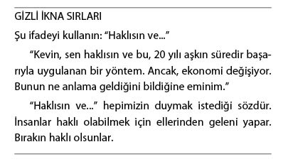

Gizli İkna Sanatı’na Giriş: Taktikler
Mevcut ve aday müşterilerle iletişim kurmanın onlarca yolu vardır. Bu bölümdeki “Gizli İkna Taktikleri” en başarılı ve profesyonel ikna ustaları tarafından kullanılan, çok az bilinen ve sır gibi saklanan örtülü taktiklerin geniş kapsamlı bir derlemesidir.
İş dünyasında, insanlarla toplantı yaparken, önerimizi sunarken, aşağıdaki taktiklerin baş başa yenilen bir öğle yemeğinde, öğleden sonra gerçekleştirilen komite toplantısında ya da 10 kişi karşısında gerçekleştirilen bir seminer konuşması sırasında da etkili olduğunu aklımızda tutmalıyız. Bu taktiklerin geçerliliği kanıtlanmıştır. Her taktik, her durumda işe yaramasa bile; elinizin altında, dilediğiniz herhangi bir durumda, herhangi biri karşısında sonuca ulaşmak amacıyla seçerek kullanabileceğiniz çok özel bir teknikler katalogu bulunmaktadır.
İlerleyen sayfalarda toplam 55 taktik anlatacağız. Öncelikle bu 55 taktiğin tamamını okuyarak tüm teknikler hakkında bilgi sahibi olmanızı, ardından geri dönerek hangi tekniği hangi durumlarda kullanabileceğinize karar vermenizi öneririz.
Bu taktikleri biliyor olmak, sizi, sadece daha etkili, başarılı bir iletişimci kılmakla kalmayacak; aynı zamanda daha iyi, daha bilinçli, daha zeki bir tüketici olmanız için gereken tüm bilgilerle de donatacaktır. Hadi başlayalım.
Hızlı Bir Şekilde Karşılıklı Uyum Sağlayın
Karşılıklı uyum, karşınızdaki insanla uyum içerisinde olmak şeklinde tanımlanabilir. Genel anlamda, insanlar, sevdikleri kişilerle daha uyumlu bir ilişki kurar. Peki, bir insanla uyumlu bir ilişkiniz olduğunu nasıl anlayabilirsiniz? Kendinize şu soruyu sorun: Karşımdaki insan bana karşı samimi, olumlu bir yaklaşım sergiliyor mu?
Cevabınız evet ise, belirli bir düzeyde karşılıklı uyum yakalamışsınız demektir. Katıldığım bir seminerde, Zig Ziglar, “İnsanlar, onlarla ne kadar ilgilendiğinizi anlamadığı sürece, ne kadar şey bildiğinize aldırmaz” demişti. Amacımız, karşımızdaki insanlarla empatik ve samimi bir ilgi kurmaktır. Karşılıklı uyum, farklı iletişim düzeylerinde karşımıza çıkar. Usta bir oyuncu olabilir ve karşınızdaki insanlarla karşılıklı bir uyum içindeymiş gibi davranabilirsiniz. Ancak, müşterilerinize ve birlikte çalıştığınız insanlara samimi bir özen göstermemeniz durumunda bunun hiçbir anlamı kalmaz.
İnsanlar samimi olup olmadığınızı kolaylıkla hissedebilir. İçgüdüleri size güvenebileceklerini ya da uzak durmaları gerektiğini söyleyecektir. İlk izlenimlerin çoğu gibi, bu da bir anda; hatta, insanlar farkına dahi varmadan gerçekleşecektir.
Karşıdaki insanın beden dilini taklit ederek (benzer şekilde oturmak, dans ederken birlikte hareket etmek gibi) karşılıklı uyumu kolaylaştırabileceğinizi zaten biliyor olmalısınız.
Uyum sağlamanın bir diğer yolu da, ortak ilgi alanları hakkında konuşmaktır. Her ikiniz de Red Sox’ı mu tutuyorsunuz? Her ikiniz de golf mu oynuyorsunuz? Bu tür bilgileri kullanmalısınız. Bunlar hakkında konuşmakta yarar vardır. Elbette, karşılıklı uyumun geliştirilmesinde konuşmanın içeriğinin de payı vardır.
Biraz çalışarak, karşılıklı uyum becerinizin doğal bir şekilde, farkına bile varmadan ortaya çıkmasını sağlayabilirsiniz. Bilmeniz gereken tek şey; bunun işe yaradığıdır.
Önümüzdeki birkaç Gizli İkna Taktiği, karşılıklı uyum ilkesine yöneliktir. Uyum yakalayamamanız durumunda karşınızdaki insanları ikna etmeniz güçleşir. Uyum olmazsa güven de olmaz, inanç da olmaz, ikna da olmaz.
Karşılıklı uyum (isim): Karşılıklı güvene, duygusal benzerliğe dayalı ilişki.
Karşılıklı Uyumu Geliştirmek İçin Konuşmanın İçeriğini Kullanın
Hedefinizin ilgi alanlarını öğrenin ve bu konularda bilginiz yoksa bilgi edinin. İnsanlar ilgi duydukları konularda konuşmaktan hoşlanır. Bu durum, zihinsel savunma kalkanlarının indirilmesine ve yeni bilgilerin -sizin vereceğiniz yeni bilgilerin- kabul edilmesine olanak tanır.
Karşınızdaki insanlar için önemli olan şeylere ilgi göstererek büyük bir uyum yakalayabilir; hatta, uzun vadeli bir dostluk bile kurabilirsiniz. Müşterilerinizin hobilerine, yaşam biçimine, ilgi alanlarına yönelik deneyimlerinizi samimiyetle paylaşmanıza, “karşılıklı uyumu geliştirmek için konuşmanın içeriğinin kullanılması” adı verilir. Basitçe ifade etmek gerekirse, yaptığınız şey, karşı tarafın ilgi alanlarını keşfetmek ve bu ilgi alanlarını aranızdaki bağı güçlendirmek amacıyla kullanmaktır.
Dale Carnegie, Zig Ziglar ve diğer birçok isim, karşı tarafa samimi bir ilgi duymaktan ve bu ilgiyi göstermekten söz eder. Peki, neden? Çünkü, samimi olması durumunda, bu tavrınız, aranızda duygusal düzeyde bir bağ kurulmasına olanak tanır. Karşınızdaki insanı etkilemenin de başka yolu yoktur.
Karşılıklı uyumu geliştirmek için konuşmanın içeriğini kullandığınızda, doğal olarak karşı tarafın da çıkarına olan bir şey yapmış olursunuz. Öz itibariyle hepimiz bencilizdir. Bir an durup kendinizi düşünün. Size, içinde sizin de bulunduğunuz bir grubun fotoğrafı gösterildiğinde önce kime bakarsınız? Elbette ki öncelikle kendinize bakarsınız. Sizden söz etmişken; karşınızdaki insanlarla herhangi bir ortamda sohbet ederken, kendinizi en fazla, sevdiğiniz konularda konuşurken rahat hissedersiniz, öyle değil mi?
Karşı tarafın ilgisini çeken ve duygusal bir bağ kurdukları konuları kullanmanın bu kadar etkili bir araç olmasının nedeni de tam olarak budur. Düzgün kullanılması durumunda, bu yöntem, karşı tarafın, kendisini size yakın hissetmesine ve size güvenebileceğini hissetmesine yol açar. Bu noktadan itibaren, karşınızda, ikna girişimlerinizi can kulağıyla dinleyen bir insan bulabilirsiniz.
Ancak, bu o kadar da kolay değildir. Örneğin; hedefinizin içinde bulunduğu ortamda, kişisel eşyalar benzeri görsel ipuçları yoksa ne yapacaksınız? Bu durumda, karşılıklı uyum yakalayabilmeniz amacıyla “süreçler” yöntemini kullanmanız gerekir. Yani, şimdi anlatacağımız gizli ikna taktiğini...
Karşılıklı Uyum Sağlamak Amacıyla Süreçleri Kullanın
Balıkçılık hikâyeleri anlatmak karşılıklı uyum sağlamaya yetmez. Karşınızdaki insanla ya da grupla uyum sağlayabilmeniz büyük bir becerinin yanı sıra, bir ilişkinin olmazsa olmazlarından olan samimi bir ilgi de gerektirir. Birçok insan, yeni tanıştığı birisine ailesinden, hobilerinden, yaşam biçiminden söz etmek istemez. Peki, hedefiniz hikâyelerden rahatsızlık duyuyorsa aranızdaki buzları nasıl eriteceksiniz? İkna etmek istediğiniz insanların çoğuna, çocukluklarından itibaren yabancılarla konuşmamaları öğretilmiştir. Kişisel meselelerini herkese açmamaları öğütlenmiştir. Peki, bu insanların kendilerini sizin yanınızda rahat hissetmesini nasıl sağlayacaksınız?
Öncelikle, onlarla benzer aktiviteler gerçekleştirmeniz, kendilerini size yakın hissetmelerine yardımcı olacaktır. Sizinle karşınızdaki insan ya da dinleyici kitlesi arasında bir bağ kurulmasını sağlayacak ortak ya da benzer bir deneyim bulunması gerekir. Bu ortak deneyim, hedefinizin kendisini sizin yanınızda rahat hissetmesini, sözlerinizden rahatsızlık duymamasını sağlayacaktır.
Ne tür “süreçleri” kullanabilirsiniz?
• İş
• İş yerinin konumu
• Şirketin, çalışılan kurumun yapısı
• Aile ya da toplumsal statü
Gördüğünüz gibi, her ikinizin de ortak olduğu, bir bağ kurmak için kullanabileceğiniz, değişik düzeyler ve durumlar vardır. Davranışlarınız ya da paylaştığınız deneyimlerin aracılığıyla, “onlar gibi” olduğunuzu, size güvenmelerinde, sözlerinizi, önerilerinizi dinlemelerinde bir sakınca olmadığını gösterebilirsiniz. İnsanlarla bağ kurabilmek, uzun vadeli başarı açısından da büyük önem taşır.
“Ya birlikte asılırız ya da ayrı ayrı.”
Benjamin Franklin
Hedefinizle Senkronize Olun
Emin olamadığınız durumlarda, karşılıklı uyum geliştirmeye başlamanın en etkili yöntemlerinden biri de “ayak uydurmak”tır. Senkronizasyon kavramı uyum ve benzerliği içerir. Basitçe ifade etmek gerekirse, müşteriniz gibi olmalısınız. Hepimiz, bize benzediğine inandığımız insanları daha çok severiz.
Kendisi gibi olduğunuzu hissetmesi durumunda, müşteriniz sizi daha çok sevecek, çok daha hızlı bir şekilde uyum yakalayacaktır. Bunu yapmanın yollarından biri “ayak uydurmaktır”. Ancak, burada aşılmaması gereken hassas bir sınır vardır. Karşımızdaki insanı taklit ettiğimiz izlenimi uyandırmayı kesinlikle istemeyiz. Karşınızdaki kişi, kendisini kullanmaya çalıştığınızı hissederse, ikna çabalarınız gizli olmaktan çıkarak açık bir hal alacak ve bu nedenle de başarısız olacaktır. Sezdirmeden hareket etmeniz gerekir. Buradaki kilit nokta senkronizasyondur.
Bu tekniği başarıyla kullanabilmenin iki boyutu vardır. Öncelikle, işe karşı tarafın bulunduğu noktadan başlamanız, kendisini size yakın hissetmesini sağlamanız gerekir. İkna gücü edinebilmeniz için, öncelikle kendisini sizinle bazı açılardan özdeşleştirebilmelidir. Karşınızdaki insanla belirli düzeyde bir bağ kurduktan sonra yavaş yavaş adımlarınızı hızlandırdığınızda, karşı taraf da size ayak uyduracaktır. Ancak, tüm çabalarınızın gizli kalmasını sağlayabilmek amacıyla öğrenmeniz gereken daha birçok şey vardır.
“İnsanlar size inanmadığı sürece, gerçekler gerçek sayılmaz. Ne anlattığınızı bilmedikleri sürece size inanmazlar. Sizi dinlemedikleri sürece ne anlattığınızı bilemezler. İlgilerini çekmediğiniz sürece sizi dinlemezler. Orijinal, yeni, farklı bir şey anlatmadığınız sürece ilgilerini çekemezsiniz.”
William Bernbach
Seslerin Senkronizasyonu
İletişim kurduğunuz insanın biraz gergin olduğunu farz edelim. Sesi de bu gerginliği yansıtmaktadır. Birçok kişi gülümseyerek, neşeli hikâyeler anlatarak bu insanı neşelendirmeye çalışacaktır. Ancak, bu yöntem hiçbir işe yaramaz. Hedefinize ayak uydurun.
Hedefinizin sesi gergin çıkıyorsa, siz de, kısa süreliğine de olsa, gergin bir tonda konuşun. Bu sözel uyum, müşterinizle senkronize olmanıza yardımcı olacaktır. Sonrasında (gerekirse) müşterinizi bu olumsuz ruh halinden çıkarabilir, daha farklı, yeni fikirlere daha açık bir ruh haline taşıyabilirsiniz.
Ses tonunuzu müşterinizinkine uydurmanın ötesinde de yapabileceğiniz şeyler vardır. Her birimiz farklı bir hızda konuşuruz. Karşınızdaki insanın konuşma hızına uyum gösterebilirsiniz. Bunlar, hem güçlü hem de sezdirmeden uygulanabilecek yöntemlerin sadece ikisidir.
Gizli ikna sürecinin birçok aşamasında olduğu gibi, bu aşamada da kaçınmanız gereken şeyler vardır. Sesinizi kullanırken, karşı tarafa özgü aksaklıkları taklit etmeyin. Kekelemek, sürekli benzer sesler çıkarmak, her cümleden önce boğaz temizlemek, ayak uydurma sürecinde kaçınmanız gereken şeylerdendir. Bu tür şeyler yapmanız durumunda taktikleriniz açığa çıkacak ve her şey bitecektir.

Solunumun Senkronizasyonu
Soluk alıp vermek en bilinçsiz eylemlerden biridir. Doğru uygulanması durumunda, bu gizli teknik, müşterinizle gerçek anlamda bir uyum yakalamanızı sağlayacaktır.
Müşteriniz de bu ritmi hissedecek ve kendisini sizin yanınızda daha rahat hissedecektir. Araştırmalarımız, karşı tarafın soluk alıp verişine ayak uydurmanızın, onlarla birlikte soluk alıp onlarla birlikte soluk vermenizin, aranızdaki karşılıklı uyumu geliştirebileceğini göstermiştir. Sadece bu tekniği kullanarak bile karşılıklı uyumu geliştirmeniz mümkündür. O kadar etkili bir tekniktir.
Soluklanma hızınızı ve yoğunluğunuzu karşı tarafa uydurduğunuz an, karşınızdaki insan gibi düşünmeye, hissetmeye bile başlayabilirsiniz. Antrenman amacıyla birlikte koşan insanlar, bir süre sonra benzer şekilde soluk alıp vermeye başlar. Bu kişiler, birbirleriyle büyük bir uyum yakalar.
Birçok insan soluklanmaya ayak uydurmanın karşılıklı uyumu geliştiren bir araç olabileceğinin farkında değildir. İnsanlarla girdiğimiz ilişkiler sırasında, bilinç radarının çok altında seyreden bu aracı genellikle unutuveririz. Ancak, geriye dönerek başarılı “ikna girişimlerini” incelediğimizde, başarının temel unsurlarından birinin uyumlu soluk alıp verme olduğunu görürüz.
Duruşunuzu ve Hareketlerinizi Senkronize Edin; Ancak, Çok Dikkatli Olun
Bir insanın soluklanmasına ayak uydurmanın aksine, duruşuna ayak uydurmak çok daha kolaydır. Ancak, bunu yaparken çok dikkatli olmalısınız. Tıpatıp aynı duruşu benimserseniz, hedefiniz rahatsız olabilir.
Amacınızın, müşterinizin rahat etmesini, böylece savunma kalkanlarını indirerek düşünmeden size uyum göstermesini sağlamak olduğunu unutmayın. Müşterinizin kendisini taklit ettiğinizi düşünmesini elbette istemezsiniz.
Başınızı Sallamanız, Kendi Düşüncelerinizi Bile Etkileyebilir
Siz de, nedenini bilmediğiniz halde, bazı şeyler hakkında çok güçlü şeyler hissettiğinizi fark ediyor musunuz? İçinde bulunduğunuz ortamdan, inançlarınıza ve bilinçaltı koşullanmalarınıza dek her şey düşüncelerinizi etkiler. Bu noktada farkına varmanıza çalıştığım şey, fiziksel hareketlerinizin de düşüncelerinizi beklenmedik şekilde etkilediğidir. Dikkatli okuyun; böyle bir şey görmeyi ummuyordunuz.
Başınızı onaylar anlamda sallamanız, duyduğunuz her şeyle hemfikir olduğunuz anlamına gelmez. Tespit ettiğimiz en şaşırtıcı şeylerden biri de başınızı salladığınız sırada olumsuz şeyler hissetmenizin, hoşnutsuzluğunuzu daha da artırdığıydı.
Başınızı onaylar anlamda öne sallayarak ya da reddettiğinizi gösterir şekilde iki yana sallayarak, sadece karşınızdaki insana bir mesaj vermekle kalmaz, kendinizi de etkilemiş olursunuz.
Petty ve Brinol’ün 2003’te gerçekleştirdiği bir araştırma, bu basit hareketlerin, insanların dinledikleri makaleye verdikleri tepkiyi etkilediğini gösterdi. Araştırmacılar, normalde kullanmadığımız elimizle yazı yazmak gibi bedensel hareketlerin de, insanların tutumlarını, kendilerine duydukları güven gibi önemli konularda bile, etkilediğini ortaya çıkardı.
Araştırmada, başınızı yukarı aşağı sallamakla kendinize, düşüncelerinize güvendiğiniz mesajını verdiğiniz belirlendi. Başınızı iki yana sallamak ise tam tersi anlama geliyordu: Kişi kendi düşüncelerine güvenemiyordu.
Bir başka araştırmada, uzmanlar, 82 üniversite öğrencisine, stereo kulaklıkların ses kalitesini, özellikle de kulaklıkların, dans ya da koşu gibi durumlardaki performansını test ettiklerini söyledi.
Katılımcıların yarısından, başlarını ortalama olarak saniyede bir kez öne eğmeleri istendi. Diğer gruptan ise, başlarını iki yana sallamaları istendi.
Katılımcılara, kampus radyosu olduğu söylenen bir radyo yayını dinletildi. Yayın sırasında, şarkılar arasında öğrencilerin kampus içerisinde kimliklerini yanlarında taşıması gerektiği benzeri anonslar yapıldı.
Yayının ardından katılımcılara, kulaklıklar, yayınlanan müzik ve yapılan anonslar hakkındaki görüşleri soruldu. Araştırma, baş hareketlerinin, öğrencilerin anonslar hakkındaki görüşlerini etkilediğini ortaya çıkardı. Ancak, bu etki, tahmin edebileceğinizden biraz daha karmaşıktı.
Araştırma, başınızı yukarı aşağı sallamanın, -ister olumlu, ister olumsuz olsun- kendi fikirlerinize güven duyduğunuzu gösterdiğini ortaya çıkardı. Başın iki yana sallanması ise tam tersini gösteriyordu: Kişi kendi düşüncelerine pek güvenemiyordu.
Araştırmaya katılan denekler, mesajlarını onayladıkları anonslara, başlarını “evet” anlamında yukarı aşağı salladıkları sırada, daha büyük bir destek veriyordu. Bunun nedeni, başı yukarı aşağı sallamanın, kişinin destek verdiği düşüncelerine duyduğu güveni artırmasıydı. Öğrencilerin, onaylamadıkları anonslar karşısında tavırları ise tam tersi yönde oldu. Başlarını yukarı aşağı sallayan öğrencilerin tepkileri, başlarını iki yana sallayanlardan daha büyük oldu. Bunun nedeni, başı yukarı aşağı sallamanın, anonslar hakkındaki olumsuz düşüncelere duyulan güveni artırmasıydı.
Katılımcılardan çok iyi bildikleri bir şeyi, kendilerini değerlendirmeleri istenen bir başka araştırmada da benzer sonuçlara ulaşıldı. Üstelik bu defa, yazı yazmak gibi tamamen farklı bir bedensel hareket kullanıldığı halde...
Bu araştırmada, katılımcılardan, kariyer planları açısından yararlı ve zararlı olacağını düşündükleri üçer özelliklerini yazmaları istendi. Ancak, tamamı sağ ellerini kullanan deneklerin bir kısmından yazarken sağ ellerini, bir kısmından da sol ellerini kullanmaları istendi. Ardından, listeledikleri düşüncelerine duydukları güveni puanlamaları söylendi.
Sonuçlar, yazarken her zaman olduğu gibi, sağ ellerini kullanan insanların, yazdıkları şeylere duydukları güvenin, sağ ellerini kullandığı halde sol ellerini kullanan insanlara oranla yüksek olduğunu gösterdi.
Bu bedensel hareketlerin, kendimize duyduğumuz güven gibi, bizim açımızdan önem taşıyan konular hakkındaki düşüncelerimize duyduğumuz inancı bile etkilemesi oldukça dikkat çekicidir.
Senkronizasyon Testi
İnsanlarla ilişkilerinize ve dostluklarınıza yönelik samimi bir ilgi geliştirmeniz, ikna sürecinin ilk aşamasıdır. İkinci aşama ise müşterinizle senkronize olmanızdır. Üçüncü aşama, yönlendirmedir. Sihirli aşama da işte budur. Bir insanı başarıyla yönlendirebildiğiniz an, bunu ne kadar kolay başarabildiğinize siz bile şaşıracaksınız.
Başarıyla yönlendirebilmiş olmanız için, söz konusu kişinin sizi takip etmesi gerekir. Peşinizden gelirse (fiziksel hareketlerinizi taklit ederse), o kişiyi bilinçaltı düzeyinde ele geçirdiniz demektir. Sunumunuzu yapmaya neredeyse hazırsınız. Ancak, öncelikle gerçek bir uyum yakaladığınızdan emin olmanız gerekir. Bu aşamada harcayacağınız fazladan birkaç saniye büyük önem taşıyabilir. Öncelikle onların “elinizde” olduğundan emin olmak için, beden dilinizi, ses tonunuzu, konuşma hızınızı değiştirmeye başlamalısınız. Karşı tarafın da aynı hareketleri yaptığını, sesini benzer şekilde değiştirdiğini görürseniz, emin olabilirsiniz.
Hedefinizi bilinç düzeyinin eşiğine taşıyana dek yönlendirme egzersizlerini sürdürün ve bu egzersize, bilincinin devreye girmesine izin vermeden son verin.
Ses Tonunuzu, Sesinizin Yüksekliğini, Konuşma Hızınızı Değiştirin
Bedeniniz ve jestleriniz aracılığıyla yönlendirme girişimlerinin işe yaramayacağı durumlarla karşılaşabilirsiniz. Böyle durumlarda (ve kimi zaman yüz yüze görüşmelerde) karşı tarafı sesinizin özelliklerini değiştirerek yönlendirebilirsiniz. Örneğin; konuyu ürününüze getirirken, konuşma hızınızı biraz artırarak, ses tonunuza daha istekli bir hava katabilirsiniz. Bunu ne zaman gerçekleştirmeniz gerektiğini, konuşmanızın içeriği size söyleyecektir.
Müşterinizin de sizi takip ederek daha istekli, daha hızlı bir şekilde konuşmaya başladığını fark ettiğiniz an, karşılıklı uyumu sağladığınıza emin olabilirsiniz.
Bir üniversite kampusundaki erkek ve kızlardan çiftler oluşturulup bir araya getirilerek 20 dakika boyunca birbirlerine sadece tek bir şey söylemelerine izin verildiği çok ilginç bir sosyal psikoloji deneyi gerçekleştirilmişti. Bu sözlerin olabildiğince sevgi ve tutkuyla dile getirilmesi gerekiyordu. Neydi bu söz? “Tuzu uzatır mısın?” Hepsi bu. Garip geliyor, öyle değil mi? Ancak, bu sözler, karşı tarafın gözlerinin içine bakarak, eşinize “seni seviyorum” dediğiniz andaki tutku ve sevgiyle söylendiğinde ortaya çıkan sonuçlar inanılmazdı.
Katılan 20 çiftin birçoğu, deneyin hemen ardından çıkmaya başladı. İster inanın, ister inanmayın, bu çiftlerden biri de evlendi!
Neden? Çünkü, hepimiz “ne söylediğin değil, nasıl söylediğin önemlidir” deyişini biliriz. İnsanların konuşma hızı, ses tonu, sesinin yüksekliği, çok şey anlatır. Kullanılan sözler verilen mesajın sadece küçük bir bölümünü oluşturur. Sesiniz, başlı başına büyük bir güçtür.
Ortaklık Kurun
Karşılıklı uyum süreci, müşterinize duyduğunuz ilgi, özen, şefkat ve iyiliğini istemeniz üzerine kuruludur. Ayak uydurmak ve yönlendirmek, hedefinizle uyumlu bir şekilde hareket etmenizi sağlayarak hem sizi hem de hedefinizi rahatlatan süreçlerdir.
Bu sürecin çok uzun bir zamana yayılması şart değildir; 20 saniyede de gerçekleşebilir, bir saat de sürebilir. Karşılıklı uyum sağladıktan sonra, sunumunuza geçebilirsiniz. Başlamanın birçok yolu vardır. En etkili yollardan biri ise hedefinize bir şeyler vermektir. Bu verilen şeyin, değer verilen bir şey olması gerekir. Uyduruk bir şeyler vererek ortaklık kuramazsınız.
Elbette ki müşterinize bu hediyeyi bir karşılık beklentisi olmaksızın vermelisiniz. Bu ilkenin sonuçları, sizi hayal kırıklığına uğratmayacaktır. Hedefinize gerçekten değer verdiği bir şey verirseniz, kendisini cömertliğinize, genellikle aynı değerde bir şeyle karşılık vermek zorunda hissedecektir. Bu karşılık, doğrudan yardım ettiğiniz kişiden gelebileceği gibi, yardım ettiğiniz kişinin iyiliğinize doğrudan karşılık verebilecek bir konumda olmaması durumunda, ileride, o kişinin bağlantıları aracılığıyla da gelebilir.
Karşılıklılık ilkesini bir beklenti içerisinde uygulamamalıyız. Bununla birlikte genellikle, yaptığımız iyilik, bize fazlasıyla döner. Bu iyiliğin kaynağını bilemesek dahi...
Kusurlarınızı İtiraf Edin
Zayıflıklarınızı karşı tarafa itiraf etmenin, bir insanın sizin gibi düşünmesini sağlamakta çok yararlı olduğu, ilk filozoflardan bu yana bilinen bir gerçektir. Hatalarınızı, kusurlarınızı itiraf etmeniz, sizi daha güvenilir kılacaktır.
İnsanlar günümüzde her şeye şüpheyle yaklaşıyor. Herkes herkesin hatasını arıyor. Ufak bir aksaklığı, kusuru, olumsuz yönü itiraf ettiğinizde, birlikte iş yapmak, işbirliği yapmak isteyen diğer insanlardan çok daha dürüst görünürsünüz.
Hukukçular, bu gizli ikna taktiğini bilir ve mükemmel bir şekilde de kullanır. Hatta Law & Order ya da benzeri hukuk dizilerinin herhangi birini izlediyseniz, avukatların, karşı tarafın gündeme getirmesini istemedikleri, davayı mahvedecek şeylerden kendi aralarında konuştuklarını duymuşsunuzdur. Peki, böyle durumlarda ne yaparlar? Bildiniz... Konuyu gündeme kendileri getirir, kısaca değinir ve devam ederler. Bu yolla, karşı taraf konuyu gündeme getirdiğinde vereceği hasar o kadar büyük olmaz.
Paylaşımcı Olun
Potansiyel sorunlarından birinin çözümüne yardımcı olarak müşterinize duyduğunuz güveni gösterin. Bir başka deyişle, kendisine, elinizden gelen her konuda yardım etmeyi önerin. Örneğin; onun adına bir telefon görüşmesi yaparak, kendisine referans olabilir misiniz? Kartvizitlerini tanıdıklarınıza dağıtarak, mağazasına daha fazla insan gelmesini sağlayabilir misiniz? Sizin işinizin dışında kalan alanlarda, müşterinizin işlerini geliştirmeye yönelik bir şeyler yapabilir misiniz? Bunları yapmayı önerin o halde.
Her zaman, insanlara elimden geldiğince yardım etmek için çabalarım. Birçok kişiye çok yardımcı oldum. Çünkü, yapılması gereken şey buydu. Yaptığım yardımlar hiçbir zaman karşılıksız kalmadı. İnsanlara bizzat telefon eder, elektronik postalarına mutlaka cevap yazarım. Gerçek anlamda kendimi, insanlarla paylaşırım.
Sizin de bu şekilde paylaşımcı davranmanız karşı tarafın sizi kendisine yakın hissetmesini sağlar. Bu gerçekleştiği an, benden diğer insanlara övgüyle söz eden, sadık bir müşteri kazandığımı bilirim.
Bu gizli tekniğin psikolojik boyutlarına göz attığımızda, karşılıklı bir uyumun ötesinde, kişisel bir bağ yarattığını görebiliriz. Bu bağ, insanları birbirine yakınlaştıran, kendilerini, tüm savunma kalkanlarını indirmelerini sağlayacak kadar rahat hissettiren bir bağdır.
Ortak Düşmanlar Bulun
Hiçbir şey, insanları, grupları, ulusları, ortak bir düşman kadar birbirine bağlayamaz. Bir düşman bulun ve karşısına birlikte çıkın. Maliye’den nefret mi ediyorlar? Ortak çıkarlarınıza zarar vermeye çalışan insanlar mı var?
Ortak bir düşman bulmak kolay olmayabilir; ancak, genel manzarayı dikkatle incelediğinizde, güçlerinizi birleştirebileceğiniz bir düşmanı kolaylıkla görebilirsiniz.
11 Eylül saldırılarının Amerika’yı tarihte görülmedik şekilde birleştirdiğini hatırlamıyor musunuz? Her yerde, hatta arabaların üzerinde bile Amerikan bayrakları dalgalanıyordu. Birleşmiş bir ülke halini almıştık. Saldırıların hemen sonrasını hatırlamaya çalışın. Konuştuğunuz insanların tamamında çok güçlü bir ulusal gurur vardı. Bu, o kadar güçlü bir histi ki; şu an bile, o günleri birileriyle konuşsanız yine aynı şeyleri hissedersiniz. Aynı şekilde, televizyonda o korkunç görüntüleri izlediğinizde de bütün bunları tekrar hissedersiniz.
O gün televizyonda izlediğim bir haberi asla unutamam. Haberlerde ele alınması gereken birçok şey vardı; kim, neden, nasıl gibi... Ancak, muhabir bütün bunların yerine, çok duygusal bir müzik eşliğinde görüntüleri yayınlamış, tek kelime etmemişti. Bu, o güne dek gördüğüm en güçlü görsel ve duygusal sahneydi. “Konuşan bir baş” ya da o günü analiz eden bir uzmanın bulunmayışı, bir şeyler anlatan herhangi bir insanın olmaması, işimi gücümü bırakarak o sahneyi izlememe yol açtı. Filmde, sirenlerin sesini, sessizliği, yaralanan kurtarma ekiplerinin elektronik yardım sinyallerini duyabiliyordunuz. O görüntü ve sesleri hatırlamak, bugün bile ürpermeme yol açıyor.
11 Eylül olayları, alışılmadık güçte ortak bir düşman yaratmıştı. O anın duygusal yoğunluğunu bir yana bırakarak, başkalarını sizin gibi düşünme konusunda ikna etme amacıyla kullanabileceğiniz gerçek dünyadaki ortak düşmanlara dönelim.
Öncelikle tüm sektörlerin ortak içsel düşmanı olan, artan sağlık sigortası masrafları ve bu artan masrafları karşılamak amacıyla daha fazla satış yaparak daha fazla kazanma mecburiyeti var.
Ardından, rekabet gibi ortak dışsal düşmanlar geliyor. Her ikinizin de rakibi olan ortak bir düşman bulabilirsiniz. Bu başka bir şirket olabileceği gibi, bir ülke bile olabilir.
Üçüncü olarak, elbette ki kişisel düşmanlar var. Şirket içerisinde müttefikler bularak, belirli kişinin yükselmemesini sağlayabilirsiniz. (Televizyondaki Survivor türü yarışmalarda olduğu gibi.)
Düşmanınızı, nerede olursa olsun belirleyin ve hedefinizle birlikte düşmana karşı güç birliği yapın. Birlikten kuvvet doğar. Bu taktiği başarıyla uygulamanız durumunda, hedefiniz sizi, kendi yanında görecektir. Bu andan itibaren, söylediğiniz her şeyi, değerlendirme gereği duymadan kabul edecektir. Gerçekleşmesini istediğimiz şey de tam olarak budur. Unutmayın, Gizli İkna Taktikleri’nin amacı, karşı tarafın fikirlerinizi, önerilerinizi, teklifinizi değerlendirmeden kabul ederek uygulamaya sokmasıdır.
Hedefinize Benzeyen İnsanlar Hakkındaki Anılarınızı Anlatın
Müşterilerinize, iş konusundaki önerilerinizi dinleyen, sizinle ilişkilerinden kazançlı çıkan insanlar hakkındaki anılarınızı, bir gizli ikna aracı olarak anlatabilirsiniz.
Hedefinize, isteklerinizi yerine getiren insanlar hakkındaki anılarınızı anlatın. Anlattığınız kişi, size hedefinizi hatırlatan, hedefinizin kendisine de, içinde bulunduğu duruma benzeteceği biri olmalıdır. Hedefiniz, içgüdüsel olarak kendisini, hikâyedeki kişiyle özdeşleştirecektir. Bu sayede kısa sürede karşılıklı bir uyum yakalayabilirsiniz.
Bir süre önce, Fortune 1000 listesinde yer alan iki şirketin CEO’suyla konuşma fırsatı bulmuştum. Görevim, bu iki ismi, 300 üst düzey iş adamının katılacağı iki ayrı toplantıda konuşmaya ikna etmekti. Başta bu insanları tanımıyordum; ancak, bu kişilere, görüştüğüm diğer kişinin konuşma davetini değerlendirdiğini anlattığımda, bu olasılık hakkında daha rahat konuşmaya başladılar.
Bu sohbetlerdeki dönüm noktası, kendilerine çok benzeyen, benzer toplantılarda konuşma fırsatı verilen ve bu öneriyi değerlendiren kişi hakkında anlattığım kısa hikâyelerdi.
İnsanlar içgüdüsel olarak kendilerini anlatılan hikâyedeki kişinin yerine koyar. Güzel bir film izlerken oyuncularla birlikte gülüp ağlamamızın nedeni budur. İnsanlar kendilerini (o kişiye çok benzeyen bir insan ya da içinde bulunduğu duruma çok benzer bir durum) anlattığınız hikâyedeki kişiyle kolaylıkla özdeşleştirerek aynı durumda olduklarını hisseder.
Amacınızın, hedefinizin kendisini o hikâyedeki kahramanın yerine koyması ve o hikâyedeki kişi gibi davranması (sizden bir şeyler satın alması, sizinle hemfikir olması ya da önerinizi kabul etmesi) olduğunu unutmamalısınız.
Saygı Gösterin
Hedefinize duyduğunuz içten saygıyı, övgülerinizle gösterin. Karşı tarafın hayranlık duyulacak yönlerini araştırın. Bu yönleri övün. Küçük bir saygı gösterisi büyük mesafeler aşmanızı sağlayacaktır. Aynı şekilde, bize de saygı, hayranlık duyulsun isteriz. Bu cümle ilk bakışta gizli anlamlar içeriyor gibi gelebilir. Tekrar okuyun. Saygı, yakın ilgi görmenizi sağlayan güçlü bir araçtır.
“Saygı hissi olmasaydı, insanlarla hayvanları ayıran bir yan kalmazdı.”
Konfüçyüs
“Bir insandan beklenen, arkasına yaslanıp kadere teslim olmak, kaderi değiştirmeye kalkmamak değildir.”
Amerikalı astronot ve senatör John Glenn

Hedefinizi Şaşırtın
Karşınızdaki kişiyi, inanılmaz bir iddia, şaşırtıcı bir bilgi ya da çok az kişinin bilebileceği bir şey anlatarak şaşkınlığa uğratın. Onlara, başka hiçbir yerde bulamayacakları şeyler gösterin. Doğruluğunu kanıtlayabileceğiniz en uç örnekleri anlatın.
İnsanlar hoş sürprizleri sever. Karşılaştıkları bu yeni rakam ya da durum karşısında isteklerinize “evet” yanıtı vermeleri kolaylaşır; çünkü, hedefiniz ancak bu yolla zevahiri kurtararak, utanç verici durumlara düşmesini engelleyebilir.
Bir insanın yeni bir şey öğrenmesine yardım ederseniz, yeni bir karar almasını (size uymaya karar vermesini) kolaylaştırırsınız. Bu yolla hedefinizin, geçmişteki kararlarını, o dönemki bilgileri ışığında verdiğini düşünerek rahat etmesini sağlarsınız. Şu an yeni bilgiler edindiklerine göre, kararlarını da bu bilgiler ışığında değiştirebilirler.
Vereceğiniz bu bilgi beklenmedik bir şey olmalıdır. Örneğin; dünya görüşlerinin değişmesine yol açabilecek yeni bir ürün ya da hizmet hakkında bilgiler vermelisiniz. Bu yolla yeni fikirleri kabullenmeye hazır bir hale gelebilirler.
Ancak, maalesef şaşırtıcı olma konusunda pek başarılı değiliz.
Bir süre önce, yağ değiştirmek amacıyla servise gittim ve ister inanın ister inanmayın, tam 600 dolarlık onarım ücreti ödeyerek çıktım. Bir de iknadan söz ediyoruz! Babam her zaman için lastiklerin ve frenlerin bakımını şansa bırakmamam gerektiğini söylerdi. Tahmin edin, tamircide değiştirilen ilk parçalar neler oldu? Bildiniz.
Tamircinin yaşadığım deneyimi -tamamen kontrol altına alarak- sıra dışı bir hale sokma konusundaki fırsatları harcamış olması üzücü. Maalesef, tamamen normal, hayal kırıklığına uğratacak derecede sıradan bir deneyimdi.
Dolayısıyla, karşı tarafı şaşırtma konusunda elinizden geleni yapın. Bu şaşkınlığın ardından yeni fikirlere ne kadar açık hale gelecekleri sizi de şaşırtacaktır.
Söz Verdiğinizden Fazlasını Sunun
Klasikleşen “Düşün ve Zengin Ol” kitabının yazarı Napoleon Hill, “ekstra çaba sarf etmek” sözünü sık sık kullanır. Bu söz, müşterinize, rakiplerinize oranla daha hızlı ve daha kaliteli hizmet sunmak için çaba harcamak anlamına gelir.
Ekstra çaba sarf etmeniz, karşı tarafın, farkında bile olmadan size gelmeye devam etmesini sağlar. Çünkü, sizin sadece ihtiyacı olanı sunmakla kalmayacağınızı, sizinle iş yapmayı rakiplerinizle çalışmaktan farklı hale getiren özel bir çaba harcayacağınızı da bilir. Bu tür kişiler, gerçekleştirecekleri karşılaştırmanın ardından sizi seçecektir.
Tüm tekniklerin en önemlilerinden biri olan bu teknik, müşterinin beklediğinden ve sizin söz verdiğinizden daha fazlasını alarak çıkmasını sağlar.
Ünlü futbol koçlarından Lou Holtz, bu tekniğin gücünü bilen insanlardandı. Takımının 42-0 geride olduğu bir maçın devre arasında, oyuncularına, topu kapmaya, sayı yapmaya yönelik inanılmaz çabaların derlendiği bir film izlettirdi. Ardından oyuncularına, bu takımda olmalarının nedeninin, sahada ellerinden geleni yapmaları olmadığını söyledi. Tüm takımlardaki tüm oyuncular bunu yapıyordu. Kendilerinden beklenen şey zaten buydu. Bu takımda olmalarının nedeninin, maçlarda sarf ettikleri fazladan çaba, yaptıkları ikinci hamle olduğunu anlattı. Farkı yaratan şey bu ikinci hamlelerdi. Takımı sahaya çıkarak maçı kazandı.
Alçakgönüllülüğün Gücünü Kullanın
Önemli bir iddianın ardından, bu iddianızı, alçakgönüllülüğün gücüyle destekleyin. Bir başka deyişle, sermaye portföyünüz son on yıl içerisinde yüzde 12 gibi rekor bir getiri sağladıysa, bunu önemsiz bir şey gibi göstererek, söze “Şimdi, yılda ortalama yüzde 10 getiri sağladığına göre...” diye devam edin. Fonlarınız 10 yıldır yüzde 12 getiri sağladığı halde müşterinizin karşısında alçakgönüllü bir tavır benimseyin. Müşteri bunu anlayacak ve takdir edecektir.
Birlikte çalıştığınız insanlara büyük beklentiler sunarsanız, bir süre sonra, daha fazlasını beklemeye başlayacaklardır. Bu yüzden hiçbir şeyi abartmayın. Alçakgönüllü davranmanız, talep ve iddialarınızın daha kabul edilir olmasını sağlayacaktır.
Net Olun
Bir otomobilin 100 kilometrede 12 litre benzin yaktığını biliyorsanız, bunu müşterinize anlatın. Ardından kendisine bir sır verin: “Ancak, belirli bir marka yağ kullanırsanız, bir depo benzinle fazladan 100 kilometreye yakın yol yapabilirsiniz. Bu da yılda binlerce dolar kazanmanızı sağlar.”
Kesin ifadeler kullanmanız, inandırıcılığınızı ve güvenilirliğinizi artıracaktır. Ayrıntılar ve bu ayrıntıların etkileri hakkında bilgi sahibiyseniz, sırtınız kolay kolay yere gelmez. İnsanlar, “Milyonlarca dolar kazanacaksın”, “Satışların iki katına çıkacak” türünden yuvarlak rakamları sevmez. Net bilgi sahibi olduklarında, bilinçsiz bir şekilde kendilerini daha iyi hissederler.
İş yerinde telefonumun yanında bir defter durur. Böylece, kiminle, hangi gün, hangi saatte neler konuştuğumu net bir şekilde söyleyebilirim. Bu, ilk bakışta garip gibi görünen alışkanlık, defalarca hayatımı kurtardı. En önemlisi de, çok etkili bir ikna aracı olduğu kanıtlandı.
Zaman zaman insanlar gerçekleştirdiğimiz görüşmeleri farklı şekillerde hatırlar. Böyle durumlarda, ayrıntılar konusunda gösterdiğim özen sayesinde hemen neler konuşulduğuna bakabilirim. Örneğin; “Emin misin, Bob? Notlarıma göre, 24 Ekim günü, saat 15:10’da konuşmuşuz. XYZ konusunda, yüzde 4’ün uygun olacağını söylemişiz. Hatırladın mı?” diyebilirim.
Bu netlik, sayısını hatırlayamadığım kadar çok kez işime yaradı. Ana fikir şudur: Net olun... Ardından, ayrıntıya girin!
Hızlandırın, Kolaylaştırın, Güzelleştirin
Herkesin, her şeyin daha iyisini, daha ucuzunu, daha hızlısını, daha kolayını talep ettiği bir çağda yaşıyoruz. Bu yüzden yapabileceğiniz şeyler konusunda söz verin ve sözlerinizi yerine getirin. Asıl farkı yaratan ekstra çabayı göstermeyi de ihmal etmeyin.
Hız, genellikle satışı (birleşmeyi, anlaşmayı) gerçekleştirmenizi sağlar. İnsanlar bir şeyi hızlı bir şekilde elde ettiğinde, daha hızlı bir şekilde harekete geçer. Kolilerinizi hızla gönderen Federal Express’in, yemeklerinizi hızla elinize ulaştıran McDonald’s’ın, sizi hızla zengin yapan lotonun, gömleklerinizi bir saatte temizleyen kuru temizlemecinin başarısının sırları budur. Günümüzde bir CD’nin tamamını bile birkaç saniyede yükleyebiliyoruz.
Daha hızlı, kolay ve iyi sonuçlar konusunda söz vermeniz, hedefinizin sizinle işbirliği yapmasını sağlayacaktır. Neden mi?
• Hızlı: Çünkü, insanlar her şeyi hemen istiyor!
• Kolay: Çünkü, insanlar tembeldir!
• İyi: Çünkü, insanlar her zaman daha iyisine layık olduklarına inanır!
Bir araya geldiklerinde, bu üç sırrın etkisi maksimuma ulaşır. Örneğin; “Raporu gelecek hafta değil, bu hafta alacaksınız. Dahası, tüm işleri ben yapacağım için sizin çalışmanıza gerek kalmayacak. Üstelik şu andakinden çok daha iyi sonuçlar elde edeceğiz, tamam mı?”
Can Kulağıyla Dinleyin
Hedefinizin söylediği her sözü soluğunuzu tutarak, büyük bir dikkatle dinleyin. O an söylediği şeylerin, dünyadaki en önemli sözler olduğunu unutmayın. Gerçekten heyecanlandığınız, samimi bir şekilde saygı duyduğunuz, çok çalıştığınız zaman, hedefiniz de amaçlarınızı başarmanıza yardımcı olmayı önerecektir.
Bütün bunları sağlayan güç tek bir sözcüktür: Dinleyin! Bulunduğum ortamlarda, sorular sorarak karşımdaki insanları konuştururum. İnsanlar konuşmayı sever. Hele kendileri hakkında konuşmaya bayılır.
Dikkatle dinlediğiniz zaman, karşınızdaki insanın takdirini kazanırsınız. Bu sayede o kişi de kendisini sizi dinlemeye mecbur hisseder.
Kimi zaman katıldığım toplantılarda sadece dikkatle dinlerim. Toplantının sonunda karşımdaki insan genellikle “Ne kadar hoşsohbet” olduğumu söyler. Oysa, ağzımı açmamışımdır... Hem de bilerek! Bu kişi, bir dahaki toplantıda da beni arayacaktır. Bu andan itibaren, karşılıklı bir uyum yakalamış ve herhangi bir konuda, “evet” yanıtı alma ihtimalini artırmış olursunuz.
Onay İsteyin
İlişki gerçek anlamda bu noktada başlar. Bu noktada müşteriniz kendisi için en iyisini istediğinizden emindir. Bir sorun çıktığında, yardıma gideceğinizi biliyordur. Onay istemenin en basit yolu, önerinizin yararlarını sıralayarak “Artık başlayalım, olur mu?” demektir.
İşte bu kadar basit... Bundan önceki aşamaların temellerini sağlam bir şekilde attıysanız, karşınızdaki insanın gönüllü onayını almanız garanti gibidir. Ancak, kilit nokta istemektir.
Birçok insan onay aşamasına kadar olan gerekli tüm temelleri başarıyla atar. Ortamı, mükemmelleştirmek için ellerinden geleni yaparlar; ancak, karşı tarafa birlikte çalışma önerisini bir türlü yapamazlar.
Karşı taraftan onay istemenin çeşitli yolları vardır. Bunların en iyilerinden biri de “farazi onay”dır. Sadece, “Yapılabilecek en iyi şey bu. Hadi başlayalım, olur mu?” deyin yeter. İşte bu kadar basit! Ancak, bunu gerçekleştirmek her zaman için o kadar kolay olmayabilir. Dolayısıyla, istemeniz gerektiğini aklınızdan çıkarmayın!
Atış yapmadığınız sürece ıskalamış sayılırsınız. O yüzden bol bol atış yapın.
Az Bulunurluk Hissi Yaratın
İstediğimiz şeyin, miktar, zaman, renk, seçenek itibariyle sınırlı olduğunu öğrendiğimizde, bu şeye duyduğumuz istek artar. Bir başka deyişle, kolayca elde edemediğimiz şeyleri daha fazla arzularız.
Bu ilke, karşınızdaki insanı ikna etmek amacıyla kullanabileceğiniz etkili bir yöntemdir. Örneğin; “Bu üründen sadece 2 bin tane yapıldı ve hepsi numaralandı. Sizinkini şimdiden ayıralım. Böyle bir fırsatı kaçırmanızı istemem” diyebilirsiniz.
Bu ikna girişimi, gelecekteki müşterilerinizin, zamanın ya da stokların tükenebileceğini, o ürünü satın alamama olasılığının bulunduğunu fark etmelerini sağlar. Neleri kaçıracaklarını anlatmak, sizin görevinizdir.
Kapınız Dostlara Açık Olsun
Kendimize benzettiğimiz insanları severiz. Bu insanlarla hızla kaynaşırız. Dostlarımıza güvenir, peşlerinden gideriz. Hepimiz sevilme isteği duyarız. Dostların benzer şeyler giymelerinin, benzer yerlere gitmelerinin; hatta, benzer araba kullanmalarının nedeni budur. Sevilme isteğimiz yüzünden dostlarımız gibi düşünür ve davranırız.
Bir satış uzmanı olarak, müstakbel müşterilerimize kendilerine benzeyen insanların (ya da şirketlerin) listesini sunarak, bu durumu, kendi çıkarımıza kullanabiliriz. Bu liste, sizin ürün ve hizmetlerinizi satın alan, keyifle kullanan, gelecekteki müşterinizin tanıdığı isimlerden oluşabilir.
“Bir insanı davanıza kazandırmak istiyorsanız, öncelikle o kişiyi, samimi bir dostu olduğunuza inandırın.”
Abraham Lincoln

Bilinmeyenleri, Bilinenlerle Bağlantısını Göstererek Anlatın
Pek bilinmeyen, kolay kolay anlaşılamayan yeni fikirleri, potansiyel müşterinizin tanıdığı ve güvendiği şeylerle karşılaştırarak anlatmanız, büyük bir ikna gücü yaratır. Bu, kimi zaman oldukça basit olabilir. Örneğin; şu ifade, yeni ve bilinmeyen bir ürünle 660DX arasındaki bağlantıyı gösterir: “Tıpkı kullandığınız 660DX gibi; ama, bunda, yüzde 50 oranında az enerji tüketen, bu sayede yılda 5200 dolar tasarruf yapmanızı sağlayan bir akış kapasitörü bulunuyor!”
Bu yolla sadece bilinenle bilinmeyen arasında bağ kurmakla kalmaz, aynı zamanda, yeni ve gelişmiş bir şeyle, sevdiğimiz, hayranlık duyduğumuz, saygı gösterdiğimiz bir şey arasında da bağ kurmuş oluruz.
Örneğin; Michael Jordan’lı iç çamaşırı reklamlarını hatırlıyor musunuz? Sizce Michael Jordan, iç çamaşırları hakkında bizim bilmediğimiz ne biliyor olabilir? Doğru, hiçbir şey... Ancak, Michael Jordan birçok insanın sevdiği, hayran olduğu, saygı duyduğu bir isim. Şirketler, sizin (tüketicilerin), “Mike gibi” olmak istemeniz umuduyla, ürünlerini tanıtmaları için ünlülere milyonlarca dolar ödüyor.
İşin içinde bir insan olmasa dahi, bağlantı etkili bir araç olma özelliğini korur. Bir Clydesdale atı gördüğünüzde aklınıza ne gelir? Budweiser. Neden? Şirket ürününü bu büyüleyici atlarla özdeşleştirmeyi başarmıştır da ondan.
Bir diğer bağlantı yöntemi de referanslar ve onaylardır. Gelecekteki müşterinize, bağımsız ve güvenilir birinin ürününüzün çok iyi olduğunu söylemesi (örneğin; saygın ya da tanınan bir müşterinizin ürününüz hakkındaki mektubu) hedefinizin zihnindeki kilitlerin açılmasını sağlar. Bu referanslar, önyargısız, güvenilir, bağımsız, dürüst ve gerçek olarak değerlendirilir. Bu anlamda, aynı şeyleri, müşterinize sizin anlatmanızdan çok daha etkilidir. Dolayısıyla, size ve ürününüze kefil olabilecek bağımsız kaynaklar bulmalısınız. Bu, en etkili gizli ikna taktiklerinden biridir.
Sevdiğiniz, hayran olduğunuz, saygı duyduğunuz birisi size bir insanla tanışmanız, ondan alışveriş yapmanız gerektiğini söylediğinde, ona duyduğunuz güven sayesinde, eleştiri mekanizmasını devreden çıkarır ve söz konusu kişinin önerilerini kolaylıkla benimsersiniz.
Grubun Parçası Olduklarını Hissettirin
Grup olmak güç verir. Hepimiz aidiyet duygusunu severiz. Kendilerine özgü, “orijinal” insanlar olduğunu söyleyen en asi gençlerin arkadaşlarına göz attığınızda, ne demek istediğimi anlayabilirsiniz.
Aynı şeyleri giyer, saçlarını aynı şekilde kestirir, grubun parçası olabilmeyi ölümüne isterler. Beğenilen bir grubun üyesi olma arzusu o kadar güçlüdür ki; işin sonunda ortaya tarikat tarzı davranış kalıpları bile çıkabilir.
“Düşünce bulaşması” kavramını bilir misiniz? Bu, bir stadyum dolusu, denetimden çıkmış taraftarın sergilediği, sahaya şişe fırlatmak gibi garip bir davranışa verilen addır. Taraftarlardan biri bunu yaptığı an, bu iş herkesçe normal görülmeye başlanır ve aynı şeyi yapanların sayısı artar. Burada bireylikten çıkma durumu da söz konusudur. Bağımsız grup üyeleri, kendilerini grubun isimsiz birer üyesi gibi görmeye başlayarak, gruba uymak, ait olabilmek amacıyla, kendilerini gruptakiler gibi hareket etmeye mecbur hisseder.
Hepimizin, bir gruba ait olma ihtiyacı duyduğumuzu bilmek işimize yarayabilir. Bu bilgiyi, hem amaçlarımıza ulaşmak hem de hedeflerimizin istediklerini elde etmelerine yardımcı olmak için kullanabiliriz.
Örneğin; iş yerinde şu tür konuşmalara rastlanabilir: “Biliyorsun Bill, biz üst düzey yöneticiler bu tür projeleri genellikle senin düzeyindeki insanlara vermeyiz. Ancak, sende bizden biri olma potansiyeli olduğunu görüyoruz. Şimdi elinden geleni yap. İleride tekrar konuşuruz.”
Ya da: “Sayın müşteri adayı, bunlardan birine sahip olduğunuz an, bir yere gittiğinizde herkesin haberi olacak! Çevrenizdeki en gıpta edilen insan haline geleceksiniz!
Ya da: “Mavisini alan insanların çoğu, yanına sarı ve beyazından da alıyor.”
Farklı bir ortamda da ortak bir grubun parçası olma ihtiyacını hissedebilirsiniz: Aç yolcular. Saatlerdir araba kullandığınızı ve acıkmaya başladığınızı düşünün. Bir dinlenme tesisine girerek bir şeyler yemeye karar verdiniz. Dört tesis gördünüz. Hiçbiri bildiğiniz bir yer değil. Ne yaparsınız? Hangisinin önünde daha fazla arabanın durduğuna bakarsınız. Güvende olmak isteğiyle, herkes ne yapıyorsa aynısını yaparsınız. Uyum göstermenin gücüyle, yaşamınızın hemen her alanında karşılaşabilirsiniz.
Müşterilerinize benzer insanların neleri tercih ettiğini gösterme girişiminiz, hedefinize cazip gelecektir. Çünkü, öz itibariyle, onlar da herkes gibi olmak istemektedir.
Zıtlıklar Yaratın
Birbirlerinden nispeten farklı iki insan, iki yer, iki ürün vb. yan yana geldiğinde, bu iki şeyi birbirlerinden çok farklı görmeye başlar ve hangisini istediğimize daha rahat karar verebiliriz. “Hangisini alsam?” sorusu, yerini “Alsam mı almasam mı?” sorusuna bırakır.
İnsanlara, iki şey arasında seçim şansı verdiğinizde, daha ucuz olanını seçer. The Tonight Show’da Johnny Carson’un ülkedeki en başarılı kurabiye satıcısı izci kızı konuk ettiği program, buna komik bir örnektir. Carson kıza başarısının sırlarını sormuştu. Kız, “İnsanların kapılarını çalarak, ‘İzci kızlara 30 bin dolar bağışta bulunur musunuz?’ diye soruyordum. ‘Hayır’ yanıtını verdiklerindeyse, ‘En azından bir paket kurabiye satın almaz mısınız?’ diyordum” yanıtını vermişti. İzleyiciler gülmekten kırılmıştı. Küçük kız, satışlarında, tezat sanatını kullanma konusunda ustalaşmıştı; hem de sekiz yaşında olmasına karşın. Bu yöntemi siz de kullanabilirsiniz. Müşterinize en iyi ürününüzü ve en ucuz ürününüzü gösterin. Kendisini bir şeyler almaya mecbur hisseden müşteri, en son seçenek olarak sunulması durumunda, en ucuz ürünü alacaktır.
Aynı teknik, iş dünyasının hemen her alanında kullanılabilir. Birilerinin sizin için bir şey yapmasını istiyorsanız, asla kabul etmeyeceği bir şey isteyin. Ardından, hayır, yanıtını verdiğinde, daha önemsiz bir iyilik isteyin. Bu pazarlıkla insanların size yardım etme olasılığı, o ufak iyiliği doğrudan istemenize oranla artacaktır.
Nedenini Sorma; Çünkü, Yanıt Anlamsız
İnsanlara sizin ürünlerinizi ya da hizmetlerinizi satın alma, adayınıza oy verme, davanıza katkıda bulunma nedenini sormanız büyük bir hata olacaktır. Neden mi? Çünkü, insanlar neyi, neden yaptığını bilmez. Aldıkları kararların ardındaki nedenleri açıklamaları mümkün değildir. Böyle durumlarda, size duymak istediğinizi düşündükleri ya da kendilerini şirin gösterecek şeyleri söylerler. Ancak, asıl nedeni asla öğrenemezsiniz. Çünkü, “neden?” sorusunun yanıtını onlar da bilmiyordur. Dolayısıyla boş yere sormayın. Başarının sırrı, sezdirmeden bilinçaltına seslenerek, karşınızdaki kişiyi bilinç düzeyinde ikna etmektir. Çok iyi planlanmış bir stratejiniz olmadığı sürece, nedenleri sormayın.
Kendi çabalarınızı analiz etmeniz ve koşulları sınamanız daha yararlı olacaktır. Geçerli olan tek oy, hedefinizin talebinizi yerine getirmesidir. Kendi çabalarınızı analiz etme, nelerin işe yaradığını, nelerin yaramadığını belirleme görevi size düşer. Bu konuda hedeflerinizin yanıtlarına güvenmeyin. Çünkü onlar da bilmiyordur.
“En büyük yetenek, tek sözcüğün yeteceği durumlarda iki sözcük kullanmamaktır.”
Thomas Jefferson
Hedefinizin Saatini Ayarlayın
Hedefinizin zamanı, perspektif değiştirmesini, farklı kararlar verebilmesini sağlar. Genellikle, sizinle yaptığı görüşmeden kısa bir süre sonra hedefiniz, sizinle size benzer tanıdığı diğer insanlar arasında hiçbir fark görememeye başlayacak ve sizin hakkınızda çabuk (ve genellikle yanlış) kararlar verecektir.
Bu konuda yapmanız gereken iki şey vardır. Öncelikle, tanıdığı diğer insanlardan farkınızı ortaya koyun. Orijinal olun. İkinci olarak da, hedefinizin geçmişte takılıp kalan zaman filtresini, önce bugüne, ardından da geleceğe ayarlayın.
Sarsılmaz Bir Güven Yaratın
Güven yaratmanın garantili yollarından biri de karşı tarafın görüşlerini öğrenmektir. Karşınızdaki insanın tutumunu benimseyin. Onun hissettiklerini hissedin. Bunu yapmanız durumunda karşınızdaki insan kendini tamamen açacak ve savunmasız kalacaktır. Sizin adil ve mantıklı bir sonuç istediğinizi düşünmeye başlayacaktır.
Bu noktada, kendi tutumunuzu ve görüşünüzü gündeme getirmeye başlayabilirsiniz: Karşı taraf, görüşlerinizi kabul etmeye hazır durumda olacaktır. Bunu yapmanın yollarından biri, “Ben de aynı şeyleri hissediyordum, ta ki bulduğum...” ya da “Ben de böyle düşünüyordum; ancak, o zaman şunun farkında değildim...” demektir. Bu tür bir yaklaşım, karşı tarafın durumu kurtarmak amacıyla önerdiğiniz tutumu benimsemesini sağlar.
İnandırıcılığınızı artıracak birçok şey daha vardır. Örneğin; sözlerinizin kaynağı nedir? Savunduğunuz, önerdiğiniz tutumu benimsemiş olan, tanınmış, kabul görmüş otoriteler bulunuyor mu?

Mekanı, Gizli Silahınız Olarak Kullanın
Bulunduğunuz ortamı ve ortamdaki şeyleri, hedefinizi ikna etmek amacıyla kullanmak bir sanat; hatta, bir bilimdir. Buna bulunduğunuz binadan, bulunduğunuz odaya, dikildiğiniz konumdan, karşınızdaki insanla aranızdaki mesafeye kadar her şey girer.
Kimi zaman karşınızdaki insanı ikna etmek amacıyla mekanı kullanmanın, iç saha avantajı gibi basit yöntemleri vardır. Hedefinizin sizin mekanınıza gelmesi ve sizin ofisinizde oturması büyük önem taşır. Kimi zamanlar, içinde bulunulan ortam, hedefinizin düşüncelerini ve davranışlarını, ağzınızı bile açmadan değiştirmenizi sağlayabilir.
Amerikan başkanlarının birçoğu Oval Ofis’in kendine özgü bir gücü olduğunu söylemiştir. Başkan’ın en büyük düşmanları Oval Ofis’e çağırılır ve bu kişiler kapıdan içeri girdikleri an, büyüleyici ortamdan etkilenir. Adeta oda karşısında ezilirler. İçinde bulundukları oda, bu kişilerin argümanlarının gücünü zayıflatır. Başkanın bulunduğu güçlü konum da ikna becerisini kat kat artırır. Bütün bunlar tek kelime konuşmadan gerçekleşir.
İster tek bir oda olsun, isterse tüm bir bina, bazı mekanların özel bir gücü vardır. Ne demek istediğimi, özel yerlere girdiğiniz an anlayabilirsiniz. Örneğin; dini inancınız ne olursa olsun, Washington’daki Ulusal Katedral’e girdiğiniz an, özel bir yerde olduğunuzu hissedersiniz. Böyle bir ortamda, pazar günü arkadaşlarınızla televizyonda maç izlerken davrandığınız şekilde davranmayacağınız kesindir. Tek başına ortamın bile düşünceler ve davranışlar üzerinde büyük bir etkisi vardır.
Sadece bu ilkeyi anlamanız, bu sayede hedeflediğiniz kişiyle belirli zamanlarda, belirli yerlerde görüşmeniz bile, gizli ikna konusunda çok daha başarılı olmanızı sağlayacaktır. Bu teklifiniz, (bu kitabı okumadığı sürece) hedefiniz açısından bir anlam ifade etmeyecektir. Ancak, kullanacağınız ortamı iyice düşünerek seçmeniz durumunda, hedefinizin tüm isteklerinizi yerine getirmesi amacına bir adım daha yaklaşmış olacaksınız.
Tutarlı Olun
Gelecekte alacağımız kararlar, geçmişteki kararlarımızla uyumlu olacaktır. Bir insana, taahhütte bulunduğunuz andan itibaren, gelecekteki eylemleriniz, bu taahhütle tutarlı olacaktır.
Satış alanında elde etmemiz gereken ilk taahhüt, randevuyu almaktır. Bunun ardından gelen diğer taahhütler önemsiz olsa bile, sizin ürün ve hizmetlerinizi satın almaya varan bir tutarlılık ağı örmeye başlamış olursunuz.
Müşterilerinize, ürün ve hizmetlerinizin neler sunmasını istediklerini sorun. (Satmakta olduğunuz ürün ve hizmeti değil; bunlardan görmeyi arzu ettikleri sonucu sormaktasınız.) “Ayda 3 bin dolar tasarruf etmek ister miydiniz?” ya da “Bu ay kazanacağınız 3 bin dolarla gelecek ay ne yapmak isterdiniz?” gibi basit bir soru bunu gerçekleştirmenizi sağlayabilir. Bu soru, karşı tarafın tasarruf etmenin hoş bir şey olacağı konusunda size onay vermesini, ardından ilgisini geleceğe yönelterek hayali tasarruflarını diledikleri şeylere harcamalarını sağlayacaktır. Şimdi, hedefinizi tekrar şimdiki zamana getirin ve bu arzulanan sonuç ile ürünleriniz ya da hizmetleriniz arasındaki bağlantıyı anlatın. Bu gibi bir durumda, ilk taahhütlerine sadık kalacak ve sizin ürün ya da hizmetlerinizi satın alacaklardır.
Gizli Hipnotik Dil Kalıplarını Kullanın
Karşınızdaki insanın ruh halini, dilediğiniz yöne çekmenizi sağlayacak özel, sözel sırlar vardır. Hipnotik Dil Kalıpları kavramının kökeni varsayımlardan oluşur. Bu, sözlerinizin ardında gizlenen, asıl niyettir. Örneğin; “Sanırım hızlı okuma yeteneğin sayesinde bu kadar çabuk öğreniyorsun” dediğinizi düşünelim. Bu cümledeki varsayım, hızlı öğrenmeyi sağlayan bir şeyler olduğudur. Bu da tahminen hızlı okuma yeteneğidir.
Bu örtülü varsayımların hipnotik bir gücü vardır. Genellikle, dikkatle kurulmuş cümlelerde, karşıdaki insanın beyninin hemen farkına varacağı ve sorgulamadan kabulleneceği birçok varsayım bulunur.
Bir başka örnek verelim: “Bu özel rapor üzerinde çalışmaya başlamadan önce bir şeyler atıştıralım, olur mu?” Bu cümlede, söz konusu kişinin o “özel rapor” üzerinde çalışacağı varsayılmaktadır. Bu arada, cümlenin sonundaki “olur mu?”ya dikkat ettiniz mi? Bu, genellikle başın evet anlamında yukarı aşağı sallanması eşliğinde kullanılan bir yönlendirme tekniğidir. Karşınızdaki insan bu isteğinize genellikle onay verecektir.
Hipnoz araştırmaları yapan insanlar, bir insanı belirli ruh hallerine sokmanın, hipnozcunun dilediği şey hakkında düşünmeye başlamasını (ürününüzü satın almak, sunduğunuz hizmetlerden yararlanmak, sizin adayınıza oy vermek, projenize yardımcı olmak) sağlamanın çeşitli yöntemleri bulunduğunu tespit etmiştir.
Bir şeyi hayal etmek, o şeyi elde etme ya da ondan uzak durma sürecinin ilk adımıdır. Ardından, bize ürünlerimizi ya da hizmetlerimizi satın alma, önerimize onay verme, o andaki hedefimizi gerçekleştirme konusunda ne yapmayı düşündüklerini anlatmalarını isteriz.
İnsanlar, sırf sordunuz diye, size düşüncelerinin gizli şifrelerini açıklamaz. Bu amaçla, geçerliliği bilimsel olarak kanıtlanmış teknikleri büyük bir ustalıkla kullanabilmeniz gerekir. Bunlar, karşı tarafın size uyum göstermesi konusunda inanılmaz sonuçlar doğurabilen özel sözcükler ve cümlelerdir. İnsanların sizin önceden belirlediğiniz yargılara ulaşmasını sağlayan ifadelerin bir kısmını aşağıda bulacaksınız.
Hipnotik Dil Kalıpları’nın cesur bir tavırla, her ne istenirse yapılacağını varsayan bir havada kullanıldığını fark edeceksiniz. Bir başka deyişle, ilk örnekteki hipnotik talimat, “Bu arabayı satın al. Buna karar verdin”dir. Bu talimat, “Sana söyleyecek değilim” şeklindeki hipnotik ifadenin içine gizlenmiştir. Cümlelerdeki talimatlar büyük harflerle, hipnotik ifadeler ise koyu harflerle yazılmıştır. Buradaki talimat, müşterinin gerçekleştirmesini istediğimiz şeydir. Bu ifadelerin cümle kalıplarına pek uyduğu söylenemez. Buna pek aldırış etmeyin. Bunların çok etkili ifadeler olduğunu, kullanırken çok dikkat etmek gerektiğini de belirtmeliyim. Parantez içerisindeki bölümlerde kısa; ancak, önemli açıklamalara yer vereceğiz.
“Sana BU ARABAYI ALmanı söyleyecek değilim. Buna sen karar vereceksin.”
“Sana BORSAYA DAHA ÇOK PARA YATIRmanı söyleyecek değilim. Kendi hesabını kendin yapacaksın.” (Farkındaysanız, sana söyleyecek değilim dediğimiz halde yine de talimat veriyoruz!)
“Düşündüm ki; KULÜBE BAŞLANGIÇTA SADECE BİR YILLIĞINA ÜYE OLmak isteyebilirsin. BİR YILIN SONUNDA ÜYELİĞİNİ YENİLERSİN.”
“BU GÜZEL ARABAYI SATIN ALmayı bir düşün istersen.” (Almak zorunda değilsin; ama, yine de düşün!)
“X Mİ Y Mİ ALacağına nasıl karar veriyorsun?”
“YENİ MODEL ALmakla BİRAZ DAHA BEKLEmek arasındaki tercihini nasıl yapıyorsun?” (Burada da aslında karar verme stratejilerini öğrenmeyi hedefliyoruz.)
“Hemen şimdi KARAR VERmek zorunda değilsin.”
“ÇOK SAYIDA FONA YATIRIM YAPmak zorunda değilsin. BİR İKİ TANE YETER.” (“İstersem yaparım!”)
“İnsanlar KALİTELİ BİR ARABAYA SAHİP OLMANIN ÖNEMİni nasıl anlamaz?”
“Neden bazı insanlar, SADECE BÜYÜKLÜĞE ÖNEM VERİR, DİĞER ÖZELLİKLERİ GÖRMEZ?” (Bazı insanlardan söz ediyorum Sayın Hedef, senden değil.)
“HEMEN İMZALAman şart değil.”
“HEMEN KARAR VERmen şart mı bilmiyorum. Kaçmıyor ya!” (Aslında biliyorum; ama, kibarlığımdan böyle söylüyorum.)
“DAHA BÜYÜK BİR EV görmek ister misin?”
“BUNUN MAVİSİni de görmek ister misin?”
“MÜŞTERİ HİZMETLERİMİZ SİZİ DÜZENLİ OLARAK ARASIN ister misiniz?” (Özel hizmetlerden yararlanmayı isteyip istemediğini soruyorsunuz.)
“Kimileri, BÜYÜK PARALAR YATIRıyor.”
“Kimi insanlar, EVLER BİTECEKMİŞ GİBİ KAPIŞIYOR.” (Hedefiniz, “kimi insanlar”dandır.)
“MÜKEMMEL BİR ARABAnız olsaydı, NASIL OLMASINI İSTERDİNİZ?”
“İDEAL HOPARLÖRünüz olsaydı, NASIL OLMASINI İSTERDİNİZ?”
“ORTAK FONLARIN BİRİNİ SEÇmeniz gerekseydi HANGİ ÖZELLİKLERİ ARARDINIZ?”
“Daha iyi bir sigorta şirketi seçmek isteseydiniz, ARADIĞINIZ EN ÖNEMLİ ÖZELLİK NE OLURDU?” (Seçme şansı vardır ve beyni de hemen seçmesini söylemektedir.)
“Hiç HEYECAN VERİCİ BİR SATIŞ EĞİTMENİ tanıdınız mı?”
“Hiç GİTTİKTEN SONRA BİLE MOTİVASYON ETKİSİ SÜREN BİR KONUŞMACI gördünüz mü?” (Bu da “hayal edin”le aynı işlevi görüyor. Baskı yapmadan beyne sızan ve “evet, istiyorum” tepkisini uyandıran bir soru.)
“BİRÇOK İNSAN SİZİN GİBİ AKILLI DEĞİL, desem şaşırır mıydınız?”
“BU ARABA BİR LİTRE BENZİNLE 10 KİLOMETRE GİDİYOR desem şaşırır mıydınız?” (“Desem şaşırır mıydınız” ifadesi, şok edici bir gerçeğin açıklandığını vurguluyor.)
“PORTFÖYÜNÜZÜN YILLIK YÜZDE 12 GELİR SAĞLAMASI durumunda olacakları düşünsenize!”
“GURUR DUYABİLECEĞİNİZ BİR EVDE YAŞAsanız olabilecekleri düşünsenize!” (Yine beyindeki “hayal edin” lambaları yanıp sönüyor.)
“KISA VADEDE Mİ YOKSA UZUN VADEDE Mİ PARA KAZANMAK isterdiniz?”
“MÜŞTERİLERİNİZİN ONLİNE DENEYİMİNİ KOLAY VE EĞLENCELİ BİR HALE GETİRmekle ilgilenir miydiniz?” (İlgilenmesi gerektiğini biliyor. Şu an tek yapması gereken bunu nasıl yapacağına karar vermek.)
“Size, DAHA FAZLA PARA KAZANmanın yolunu gösterseydim, ŞİRKETİMİZLE ÇALIŞır mıydınız?”
“Size ON YAŞ GENÇ GÖRÜNmenin yollarını gösterseydim, UYGULAr mıydınız?” (Bu, kusursuz bir kapanış hazırlığı sorusudur. Gösterebilecek olmasanız bu soruyu sormazdınız. Şimdi, “evet” yanıtı alır almaz gösterebilir ve anlaşmayı bağlayabilirsiniz.)
“YILDA 25 BİN DOLAR EKSTRA GELİR kazanmak nasıl bir şey olurdu?”
“İNSANLARI BÜYÜLEYEN BİR VÜCUT sahibi olmak nasıl bir his olurdu?” (Hayal edin...)
“ÇOK EĞLENCELİ OLACAK mı bakalım!”
“UZUN SÜRE BİRLİKTE ÇALIŞABİLİR miyiz, bilemezsiniz. (Bilemezsiniz dediğiniz an, aslında bunu biliyor olacaktır.)
“Size SATIŞLARINIZI ARTIRMANIN YEDİ YOLUnu gösterebilir miyim?”
“Size DAHA GÜÇLÜ VE ETKİLİ GÖRÜNMENİN YOLLARINI gösterebilir miyim?” (Satış yapma konusunda müşteriden izin istemek de oldukça etkilidir.)
“HEMEN ŞİMDİ KARAR VERİRSENİZ İÇİNİZ RAHAT EDER mi bilemiyorum!”
“HEMEN ŞİMDİ YATIRIM YAPARSANIZ UZUN VADEDE KAZANIRSINIZ, diyebilir miyiz?” (Ben düşünürken, siz de hayal edin.)
“Sizce de ÜLKEYİ YÖNETECEK YENİ BİR BAŞKANın zamanı gelmedi mi?”
“Sizce de BAŞARISI KANITLANMIŞ BİR ORTAK FON ...’den DAHA İYİ değil mi?” (“Sizce de” diye başlayan bir soruya “hayır” demek kolay değildir.)
“VERGİ İŞLERİNİZLE BİRİLERİNİN İLGİLENDİĞİNİ BİLMEK, sizi daha MUTLU hissettirmez mi?”
“Siz de, YENİ BİR ARABANIN ESKİSİNDEN DAHA İYİ olacağını hissetmiyor musunuz?”
Hipnotik Dil Kalıplarını tekrar gözden geçirelim:
• Akıl verecek değilim; ama,...
• Ne düşünüyorsunuz?
• Bilmek isteyeceğinizi düşündüm...
• Karar vermenize yardımcı olacak...
• Mecbur değilsiniz...
• Kimi insanlar nedense...
• Bilemiyorum...
• Görmek ister miydiniz?
• Bazıları...
• Olsaydı...
• Seçmeniz gerekseydi...
• Hiç gördünüz mü?
• Duysanız, şaşırmaz mıydınız?
• Neler olabileceğini bir hayal edin...
• İlgileniyor musunuz?
• Size yöntemini gösterseydim...
• Neler hissederdiniz?
• Bilemezsiniz...
• Göstermek isterim...
• Acaba?
• Sizce de öyle değil mi?
• Siz de öyle hissetmiyor musunuz?
Sırf bu ifadeleri kullanmanız; elbette ki, karşı tarafın istediğiniz şeyi yapacağını garantilemez. Bu sözleri söylerken kullandığınız ses tonu, sesinizin hızı gibi şeyler de çok önemlidir. Bu ifadeleri farklı iş ortamlarında elinizden geldiğince kullanarak alıştırma yapın ve neler olduğunu izleyin. İnsanlar, taleplerinize, geçmiştekine oranla daha fazla uymaya başlayacaktır.
Bedeniniz Sizinle Aynı Dili Konuşmalı
Sizi dinleyen kişiye, bedeninizle, zihninizle, sözlerinizle aynı mesajı gönderebildiğinizde binlerce kat daha ikna edici olacaksınız. Bedeninizin herhangi bir parçası bile bu mesajı iletmekte yetersiz kalırsa, karşı tarafı ikna etme şansınız sıfıra iner.
Dr. Albert Mehrabian, yanlış anlaşılan ünlü araştırmasında, yüz ifadelerinin ve ses tonu, hız gibi ses özelliklerinin doğru kullanılması durumunda, söylenen sözlerin önem sıralamasında son sıraya indiğini ortaya çıkarmıştır:
• % 55 Yüz ifadeleri
• % 38 Ses özellikleri
• % 7 Sözler
Farkına vardıysanız, Mehrabian’ın araştırmasında, aktarılmak istenen mesajın sadece yüzde 7’si sözlerle iletilmiştir. Mesajın yüzde 38 gibi çok daha yüksek bir oranı ses özellikleri kullanılarak iletilmiştir. Mesajın yüzde 55 gibi şok edici büyüklükte bir kısmı ise yüz ifadeleri aracılığıyla aktarılmıştır. Birçok insan bu üç unsur hakkında hiç kafa yormaz; oysa, maksimum ikna gücüne ulaşabilmeniz için, bu üç unsurun da aynı mesajı iletmesi gerekir. Birçok kişinin ikna edici olmayı başaramamasının nedeni de bu üç nokta üzerinde düşünme zahmetine girmemesidir. Bu kişiler, birilerini ikna etmeye kalktılarsa bile, nasıl başarılı olacakları konusunda hiçbir fikirleri olmamıştır. Ancak, artık bu formülü bildiğinize göre, kullanmayı seçtiğiniz andan itibaren yüzde yüz verime ulaşacaksınız.
Yüzde yüz oranında tutarlı bir mesaj iletme konusunda başarılı olmanın kilit noktası, iletmeye niyetli olduğunuz mesajı, yapacağınız sunumu tüm ayrıntılarıyla ele almanızdır. Kullanacağınız sözcükleri dikkatle seçtikten sonra, bunları nasıl söylemeniz gerektiğini, yüksek sesle egzersiz yaparak belirleyin. Hatta bir adım daha ileri giderek, bir kayıt cihazı alın ve yaptığınız egzersizleri kaydedin ve dinleyin. Şok olacaksınız. Bu, sadece sesinizi, neleri, nasıl söylediğinizi duymanızı sağlayan çok etkili bir araçtır. Bu yolla, iletişimde önemli bir yeri olan beden dilinin etkisini ortadan kaldırarak sesinize odaklanabilirsiniz. Son olarak beden diliniz üzerinde kafa yorun. Bu konuda kullanabileceğiniz en iyi kaynak, sunumunuzu video kamerayla kaydetmektir. Kendinizi izlerken ne kadar değişik şeyler hissedeceğinize siz de şaşıracaksınız.
Beden dilinizi nasıl geliştirebileceğinizi bilemiyorsanız da sorun değil. Neyse ki bu kitapta, beden dilinin gücüne ayrılmış, sunumunuzun etkisini artırarak, çok daha ikna edici olmanızı sağlamaya yönelik ipuçlarıyla dolu koca bir bölüm bulacaksınız.

Jedi Gibi Düşünün... SOD’u (Sonuç Odaklı Düşünce) Kullanın
Çocuk kitaplarındaki labirentleri çözmekte kullandığınız taktiği hatırlar mısınız? Sondan “başlangıç”a doğru gidildiğinde çözüme çok daha kolay ulaşılıyordu. Sonuç odaklı düşüncede de işe ulaşmak istediğimiz noktadan başlar, şu an bulunduğumuz yere doğru ilerleriz. Bu yöntem, dilediğiniz sonuca ulaşmanızı neredeyse garantilemenize yarayacaktır. SOD yöntemini, esnek yapısından dolayı, hem kısa vadeli hem de uzun vadeli hedeflerinize ulaşmakta kullanabilirsiniz.
Sonuç odaklı düşüncenin en iyi örneklerinden biri olimpiyatlara katılan atletlerdir. Bu atletler, yarıştıkları dallardaki en iyi performansa (ve olimpiyat altınına), nasıl yarışacaklarını ve nasıl bitireceklerini sakin bir şekilde defalarca hayal ederek ulaşır.
Benzer şekilde, dünyanın en iyi satıcıları ve iş adamları da, ulaşmak istedikleri sonucu, kafalarında, aynı zengin berraklık içerisinde canlandırır. Bu yöntem, karşılarına çıkabilecek tüm olasılıklara hazırlanmalarını sağlayarak, başarı şanslarını artırır.
Peki, hangi sonuca ulaşmak istediğinizi nereden bileceksiniz? Aşağıdaki egzersizi yapın; bu egzersiz, tam olarak ne istediğiniz konusunda derinlemesine, somut ve önemli fikirler edinmenizi sağlayacaktır.
Elinize bir kağıt ve kalem alarak rahatsız edilmeyeceğinizden emin olduğunuz bir yere gidin. Ardından kendinize şu soruyu sorun: “İlişkilerim, iş yaşamım, kariyerim, ailem, dostlarım, gelir düzeyim ve emeklilik günlerim konusunda ne tür hayallerim var?”
Sonra, ne istediğinizi ve bunları elde ettiğinizde sizin için ne anlama geleceğini birer cümleyle anlatın. Eğer anlatacak bir iki cümle bulamıyorsanız, o maddeyi listeden tamamen çıkarın. Ardından, gerçekçi bir hesapla, hayallerinizin yanına, bu hayali gerçekleştirmenin ne kadar sürebileceğini not edin. Son olarak hayallerinizle sizin aranıza girebilecek şeyleri yazın.
Şimdi üzerinde çalışmaya başlayacağınız bir numaralı hedefinizi seçin. Ardından, söz konusu insanla ilk karşılaşma sahnenizi gözünüzde canlandırarak kendinize şu soruları sorun:
1. Bu süreçten tam olarak ne elde etmek istiyorum?
2. Karşımdaki insan ne istiyor? Bilmiyorsam, ne istiyor olabilir?
3. Kabul edebileceğim en kötü sonuç ne olabilir?
4. Bu süreçte ne tür sorunlarla karşılaşabilirim?
5. Bu sorunlarla nasıl baş edebilirim; mümkün olduğu durumlarda, bu sorunları karşımdaki insanın da yararına olacak şekilde nasıl kullanabilirim?
6. Sonuca nasıl ulaşabilirim?
İkna ustalarının tamamı, bilinçli ya da bilinçsiz bir şekilde, bu yöntemi kullanır.
Kullanmaya başladığınızda, bunun sihirli bir yöntem olduğunu göreceksiniz. Gizli İkna Taktikleri’ni bilmeyen insanlar şanslı olduğunuzu düşünecektir. Oysa, siz asıl nedeni biliyor olacaksınız. Her şeyin sırrı, bilinçli ve sıkı çalışmadır. Kendinizi, fırsatların karşınıza çıkacağı ana iyi hazırlamış olacaksınız. Ne derler bilirsiniz: “Şans, hazırlıklarla fırsatların buluşmasıdır.” Sonuç odaklı düşünce yöntemini kullandığınızda, çevrenizdeki insanların gönüllü işbirliğini de kullanarak, hedeflerinize etkili bir şekilde ulaşmaya hazır hale geleceksiniz.
“Yaşamınızda başardığınız ve başaramadığınız her şey, düşüncelerinizin sonucudur.”
James Allen
İnsanların Bilgileri -Kendilerine ve Size- Nasıl Aktardığını Belirleyin
Sahip olduğumuz bilgilerin büyük bölümünü üç temel yöntemden birini kullanarak ediniriz. Bunların ilki görseldir. Görselden kastımız görebildiğimiz her şeydir. Görsel dünyamız, “kanıt” teşkil eder. Bir şeye; ancak, gözlerimizle gördüğümüzde inanırız! Karşımızdaki insanı ikna etme girişimlerimiz sırasında görsel desteklerden yararlanmamız da oldukça etkilidir.
Görsel kanıtlar, çabalarınıza güç ve inandırıcılık katar. Karşınızdaki insanın temel kanıtlama yöntemi olarak görsel kanalları kullandığını, “Her şey çok net”, “Gözümde canlandırıyorum”, “Ne demek istediğinizi görebiliyorum” gibi sözler kullanmasından anlayabilirsiniz.
İkinci olarak, işitsel kanallar vardır. Bir insan bize bir şey söylediğinde ya da önemli olduğunu düşündüğümüz bir şey duyduğumuzda, işitsel kanalı kullanıyor oluruz. Hedefinizin işitsel olup olmadığını, “Kulağa hoş geliyor”, “Duy da inanma”, “Kulaklarını çınlattık” gibi sözler kullanmasından anlayabilirsiniz.
Bir de kinestetik kanal vardır. Bu noktada hisler sahneye girer. (“Sahneye girer” derken, görsel bir gösterge kullandığımı fark etmişsinizdir sanırım.) Olayları genellikle hisleriyle kanıtlamayı seçen insanları, “Doğru bir şey yapmadığımızı hissediyorum”, “İyi hissettirdi” gibi sözlerden seçebilirsiniz.
Hedefinizi dikkatle dinleyerek, bu tekniği gizli bir silaha dönüştürebilirsiniz. Kullandığı sözcüklere kulak verdiğinizde, bilgileri nasıl değerlendirdiklerine ilişkin ipuçları edinebilirsiniz. Ardından, ikna etmek istediğiniz talebinizi, karşınızdaki kişiye bu kanalı kullanarak aktarabilirsiniz. Örneğin; hedefinizin, “Bu sese bayılıyorum” dediğini duydunuz... Hemen, “Bu sistemi kurduğunuzda, üretim tıkır tıkır işleyecek” diyebilirsiniz. Bu işitsel dil, söz konusu kişiyi ikna etmekte oldukça etkili olacaktır. O kişinin dilinden konuşarak, taleplerinizi kabullenmeye daha hazır hale getirmiş olursunuz.
HHG Tekniği
Hissettiğini, Hissetmişti, Gördüler Tekniği, satış sektöründe uzun süredir kullanılmaktadır. Birçok büyük ikna tekniği gibi, bu teknik de sadece satış sektöründe değil; yaşamın her alanında uygulanabilir. Farklı düzeylerde uygulanabilmesi açısından da çok özel ve çok çok etkili bir tekniktir.
Bu tekniği bir örnekle açıklayalım: “Neler hissettiğini anlıyorum. Müşterilerimin çoğu da başta böyle hissetmişti. Ancak, dikkatle incelediklerinde gördüler ki...” Satış sektöründe çalışmıyorsanız, ortadaki hissetmişti bölümünü, birçok kişi hissetmişti olarak da kullanabilirsiniz.
Bu tekniğin çok değerli olmasının birçok nedeni var. Öncelikle, bu teknik, empati düzeyinde etkilidir. Bu, hedefinizle kurduğunuz, beyinlerindeki eleştirel süreçleri devre dışı bırakan duygusal bağdır. Ancak, etkili olması için samimi bir empati kurulması gerekir. Numara yaptığınız an başarısız olursunuz.
Dahası, bu teknik, birçok kişinin de benzer şeyler hissettiğini vurgular. Bu da karşı tarafın yalnız olmadığını anlamasını sağlar. İnsanlar, kendilerine benzer kişilerin de benzer şeyler yaptıklarını bilmekten mutluluk duyar. Bu anlamda, bu yöntem, başkalarının da aynı şeyleri yaptığını gösteren bir “sosyal kanıt”tır. Bu durum, riskleri ortadan kaldırır ve hedefinizin kendisini rahat hissetmesini sağlar.
Son olarak, bu yöntem sayesinde çözümü ortaya çıkarmalarına yardımcı olmuş olursunuz. “Dikkatle incelediklerinde gördüler ki...” diyerek, karşı tarafa durumu kurtarma fırsatı verirsiniz. Bu, yaşamsal önem taşıyan aşamalardan biridir. Çünkü, bu yolla karşı tarafın bu bilgi ışığında sizin işinize gelecek bir karar vermesinin yolunu açarsınız.
Silme, Çarpıtma, Genelleme
Hepimizin, her gün düştüğü bu hata iletişimi verimsiz kılar. Cesaret kırıcı, değil mi? Ancak, kaygılanmayın; çünkü, neyin ne olduğunu anladığınız an, ne zaman ne yapacağınızı denetleyebileceksiniz.
Önce silmeyi ele alalım. Bunu ihtiyaçtan yaparız; aksi halde, yaşamımız boyunca en ince ayrıntıları bile anlatmak zorunda kalırız. Hayat kısa, ikna etmek istediğimiz kişinin dikkat genişliği ise daha da kısadır. Bu yüzden önemsiz ayrıntıları bir kenara bırakırız. Ancak, burada, ilk kez, neleri kenara bıraktığınızı dikkatle değerlendirmenizi isteyeceğiz. İnsanlar sıklıkla çok önemli, karşı tarafı ikna etmesine yardımcı olabilecek, ikna edici potansiyele sahip ayrıntıları bir kenara bırakmaktadır.
İkinci kavram çarpıtmadır. “Gelmiş geçmiş en kötü filmdi! Dört saat sürdü gibi geldi! Hele o efektler! Sekiz yaşındaki yeğenim bile daha iyisini yapardı!” Tamam, olguları biraz çarpıtmış olabilirim; ancak, sanırım ne demek istediğimi anladınız. Kimi zaman bir noktayı vurgulamak amacıyla durumun, hikâyenin bazı boyutlarını çarpıtırız. Ancak, bilinçsiz bir şekilde de olsa, karşımızdaki insanlara bir şeyler anlatırken ya da kendimizle yüzleştiğimizde de bir şeyleri çarpıtırız. Bu çarpıtmalar, kimi zaman işe yarasa da genellikle yarardan çok zarar verir. Bu yüzden çarpıtma girişimlerinize çok dikkat edin.
Son olarak genellemeyi ele alacağız. Herkes, her an genellemeler yapar ve herkes de bundan etkilenir. Sorunu, biraz genelledim; ancak, sanırım ne demek istediğimi anlatabildim.
Bu üç filtrenin gücünü bilirseniz, önerinizdeki, hedefinizin itiraz edeceğini bildiğiniz noktaları silmeyi, kazançları ve kayıpları çarpıtmayı, sonuçları hedefinizin çıkarı doğrultusunda genellemeyi başarabilirsiniz. Hepimizin sildiğini, çarpıttığını ve genelleme yaptığını aklınızdan çıkarmayın ve bunu, karşınızdaki insanların, isteklerinizin kendilerine daha çekici geleceği noktalara ulaşmalarına yardımcı olmak amacıyla kullanın.
Not Alma Taktiği
Kimi zamanlar, hedefinizin aldığınız karara uymasını ve arzuladığınız davranışları gerçekleştirmesini garanti altına almanız büyük önem kazanabilir. Hedefinizin sözüne sadık kalmasını istiyorsanız, yazmalarını sağlayın.
Bu yöntem neden etkilidir? Bu sadakat tekniği gizli gücünü, hedefinizi de sürece aktif bir şekilde katma becerisinden alır. Belirli şeyleri yapacaklarını yazmalarını sağlamak, o işleri gerçekleştirme olasılıklarını artırır. Yazmak, sadakat gerektirir.
İkna girişimi sırasında, hedefinizin eline bir kalem tutuşturmayı ihmal etmeyin. Doğru zaman geldiğinde, çözümü yazarak sürece katılmasını sağlayın. Çözümün ne tür bir şey olacağını anlatmasını isteyin. Söz verdiğiniz şeylerin tamamının gerçekleşmesi durumunda ne tür kazançlar elde edeceklerini yazdırın. Dileklerinizi yerine getirmesi durumunda üstlerinin kendisine nasıl bakmaya başlayacağını yazdırın. Her şeyi yazmasını sağlayın. Ne kadar çok şey yazılırsa, sadakat düzeyi de o kadar artar ve dilediğiniz eylemleri gerçekleştirme olasılığı o kadar yükselir.
İkna girişimleri sırasında, gizli ikna silahları olan kağıt ve kalemi yanınızdan ayırmayın.
Doğru Zamanda Sesinizi Kısın
Bu, çok az bilinen bir tekniktir. Özellikle kendinize duyduğunuz güveni ve duruma hâkim olduğunuzu anlatmak istediğiniz durumlarda oldukça etkilidir. Aynı cümleyi daha kısık bir sesle tekrarladığınızda, daha güvenilir ve güçlü görünürsünüz. Bu tekniğin tek zor kısmı, iletişim sırasında kendinizi denetleyebilmenizdir.
Televizyonlardaki ana haber bültenlerini dikkatle dinleyin. Sunucu, durumun ciddiyetini ve otoritesini göstermek amacıyla, zaman zaman kısık sesle konuşmaya başlar. Ardından eğlenceli bir hikâyeye geçtiklerinde, ses tonunu da, haberin eğlenceli ve komik olduğunu anlatacak şekilde değiştirir. Haber spikerlerini dikkatle dinleyin. Bu insanlar, seslerinin tonlarını, yüksekliğini kullanarak aktardıkları habere anlam katmayı başaran profesyonellerdir. Televizyondan bu anlamda çok şey öğrenebiliriz.
Görevinize ve ilettiğiniz mesaja odaklanma konusunda zihinsel bir denetim sağladığınızda, varlığınızın ilk bakışta sezilmeyen; ancak, çok daha güçlü olan kısımlarını da özgürleştirebilirsiniz.
“İnsan sesi, ruhun organıdır.”
Henry Wadsworth Longfellow
80/20 Kuralı
İş dünyasındaysanız, 80/20 kuralını duymuşsunuzdur. Basitçe ifade etmek gerekirse, ulaşılan sonuçların yüzde 80’i, harcanan çabaların yüzde 20’sinden gelir. Bu kural, hem profesyonel iş yaşamınızdaki hem de özel yaşamınızdaki her şeye uyarlanabilir.
Pareto ilkesi olarak da bilinen bu kuralı ortaya atan kişi, İtalyan ekonomist Vilfredo Pareto’dur. Pareto, yaşadığı dönemde, ülkedeki toprakların ve mal varlıklarının yüzde 80’ine, nüfusun yüzde 20’sinin sahip olduğunu belirlemişti.
Günümüzde yaşamın her alanına yayılan bu kural, tüm ülkelerde, tüm kategorilerde geçerlidir. Şimdi 80/20 kuralının ilginç örneklerine göz atalım:
• Restoranlar, gelirlerinin yüzde 80’ini, mönülerindeki yiyeceklerin yüzde 20’sinden elde eder.
• Araba satışlarının yüzde 80’ini, yeni modellerin yüzde 20’si oluşturur.
• Toplam harcamaların yüzde 80’ini, müşterilerin yüzde 20’si gerçekleştirir.
Hedefe yönelik yaklaşımınızı geliştirirken, başarılı olabilmek için bu kitaptaki gizli ikna taktik ve sırlarının bir bileşimini kullanmanız gerektiğini bilmelisiniz. Bir başka deyişle, başarınızın yüzde 80’ini, bu kitaptaki tekniklerin yüzde 20’sini kullanmanıza borçlu olacaksınız. Kimi zaman bir yığın teknik yerine, sadece birkaç tekniği büyük bir ustalıkla kullanmak daha önemlidir. Birçok tekniği birden kullanmak ters tepebilir.
80/20 kuralını bilmeniz, daha etkili ve becerikli bir ikna ustası olmanıza yardımcı olacaktır.
Gelecekteki Müşterinizi İkna Etmek ve Müşteri Pişmanlığını Azaltmak Amacıyla Aşılama
Arkadaş çevresinin baskısı, lise yıllarıyla birlikte ortadan kalkmaz. Başkalarının satın aldığımız şeylerle ilgili düşünceleri, bizi kaygılandıran bir konudur. Kimi zaman, istediğiniz seçimi yapan müşteriniz, sözüne sadık kalmaz ve fikrini değiştirir. Neden? Bunun nedeni, özetle, yaşamları üzerinde etkisi ve gücü bulunan insanların, yanlış yaptığını söylemeleridir. Bu söz üzerine bizi arayarak, fikirlerini değiştirdiklerini bildirirler.
Bu durum, insanı yatağa düşüren grip virüsüne benzer. Hedeflerinizin temas içerisinde olacağı diğer beyinleri, bulaşıcı birer virüs gibi görebiliriz. Sizin göreviniz, hedefinizi, bu zihin virüslerine karşı bağışıklık kazanarak, sizin çıkarınıza olan kararlarından caymamalarını sağlama amacıyla “aşılamak”tır. Hatta, bu taktik konusunda ustalaşmanız durumunda, diğer insanların eylemleri ve tepkileri, hedefinizin ilk kararını güçlendirmesini bile sağlayabilir.
Hedefinizin, ikna girişimlerine ne tür bir tepki vereceğini enine boyuna değerlendirdiyseniz, diğer insanların hedefinize neler söyleyeceğini de tahmin edebilirsiniz. Bunları öngörebilirseniz, hazırlığınızı da önceden yapabilirsiniz.
Başarılı olduğunuzu ve hedefinizden taleplerinize uyma vaadi aldığınızı; ancak, hedefinizin insanlarla konuştuktan sonra fikrini değiştirdiğini varsayalım. Şimdi bu insanı nasıl “aşılayabileceğimize” bakalım.
Bir dirençle karşılaşmayı beklediğinize göre, bu beklentinizi hedefinizle paylaşabilirsiniz. Örneğin şöyle bir şey diyebilirsiniz: “İkimiz de bunun doğru karar olduğunu biliyoruz; çünkü, her şeyi gözden geçirdik. Peki; ama, size ne yaptığınızı soracak, fikrinizi değiştirmeye kalkacak olan insanlara ne diyeceksiniz?”
Bu soru birçok işe yarar. Öncelikle hedefinizle aynı tarafta olduğunuzu gösterir. “İkimiz de biliyoruz” dediğinizde, ortak bir anlayışı yansıtmış oluyorsunuz. Ardından kararın doğruluğunu vurguluyorsunuz. “Çünkü, her şeyi gözden geçirdik.” Bu sözün etkisi, kullandığımız “çünkü” sözünden gelir. Daha önce de belirttiğimiz gibi, “çünkü” sözü, zihni tetikleyerek, alınan kararın gerekçelerini ortaya çıkarır ve sağlam bir zemine oturtur. Bu sözün ardından, her şeyi gözden geçirdiğimizi belirtiyoruz. Bu ifade, o ana dek duygusal temelli olan bir kararı, olgusal bir temele oturtur. Oysa kullandığımız sözcükler dışında bir şey değişmiş değildir. Konuşmamızı, hedefinizden, aldığı kararı savunmasını isteyen bir soruyla bitiriyoruz. Bu, ileride olabileceklere hazırlık aşamasıdır. Hedefiniz bu soruyu yanıtladığında, yanında olmadığınız durumlarda bile dış güçlere karşı aşılanmış olacaktır.
Bu aşılama işlemi, taleplerinize sadık kalma konusundaki kararlılıklarını artırarak, hedefinize ulaşmanızı kolaylaştıracaktır. Emin olun işe yarıyor!
Hedefiniz size onay verdiği halde kararsız görünüyorsa, bu tekniği, hedefinizi aşılayarak verdikleri karara sadık kalmalarını sağlamak amacıyla da kullanabilirsiniz. Onlara şu soruyu sorun: “İkimiz de bunun doğru karar olduğunu biliyoruz; çünkü, her şeyi gözden geçirdik. Peki; ama, size ne yaptığınızı soracak, fikrinizi değiştirmeye kalkacak olan insanlara ne diyeceksiniz?” Bu sorunun işe yarayacağı garantilidir. Çünkü, eleştiri mekanizmasını devre dışı bırakır. Bu tekniği anlayabilmenin en iyi yolu uygulamaktır. Hedefinizi aşılamak amacıyla bu soruyu kullanın ve etkisini gözlerinizle görün.
Esneklik
Kimi zaman en ikna edici insan olabilmek demek, en esnek insan olmak anlamına gelir. Esneklik, sadece hedefinize ulaşmak amacıyla uyguladığınız taktik ve teknikler açısından değil; hedefe giden yol açısından da kilit önem taşır.
Evinizden iş yerinize giden yol üzerindeki köprünün kapalı olduğunu varsayalım. Ne yapardınız? Oturup köprünün açılmasını beklemeyeceğiniz kesindir. Eve dönüp yatağınıza girmeyeceğinize de eminiz. Normalde kullanmadığınız yan yollara dalarak, sizi işinize götürecek alternatif yollar bulursunuz.
Aynı şey, ikna girişimleri açısından da geçerlidir. Kimi zaman, yaklaşımlarımız hakkında kafa yormamıza, tüm olasılıkları gözden geçirmemize karşın, çabalarımız başarısızlıkla sonuçlanır. Ancak, başarısızlığı kabullenmediğiniz sürece işiniz bitmiş sayılmaz. O halde, en iyi çözüm, “köprünün kapalı olduğunu” varsaymak ve hedefinize ulaşmanızı sağlayacak başka yollar aramaktır. Farkındaysanız, hedefinizde hiçbir değişiklik olmadı. Farklı yollardan da olsa, halen aynı hedefe doğru gitmektesiniz. Esneklik tekniği tam olarak budur.
İçinde bulunduğunuz duruma uygulanabilecek gizli ikna taktiklerinin listesini çıkarın. Bu liste sizin yol haritanız olacaktır. Kapalı bir yolla karşılaştığınızda haritanızı açarak, başka bir yol seçin.
Çocuklar da istedikleri şeyleri bu yolla elde eder. Çocuklar inatçıdır. İsterler de isterler. Kimi zaman aynı şekilde istemeyi sürdürseler de genellikle istekleri konusunda oldukça yaratıcı davranabilirler. Hatta istekleri konusunda pazarlığa bile tutuşabilir, ev işlerini yapma gibi sözler verirler. Gözlerini belirli bir hedefe dikmişlerdir. Tüm olasılıkları denemeden de pes etmezler.
Bu inatçı tutumu benimseyerek, esnek bir yaklaşım uygulayabilirsek, ikna oyunundaki başarılarımız, başarısızlıklarımızı aşacaktır.
Gizli Empatik Zihin
Gizli İkna Taktikleri konusunda kalıcı bir başarı elde edebilmek için birçok özelliği taşımak gerekir; içlerinden biri, hepsinden önemlidir. Nedir bu? Empati! Dur bakalım, empati diye bir teknik mi var, diyebilirsiniz. Evet, var.
Karşınızdaki insanlarla empati kurabilme becerisi, yaşamsal öneme sahiptir. Hedefiniz, empati duygusundan yoksun olduğunuzu, kendisine samimi bir ilgi ve sevgi göstermediğinizi hissettiği an, ikna girişiminiz başarısız olacaktır. Bu durum, her an için geçerlidir. Kanıt istiyorsanız, tam tersini, müşterinizin sizi samimiyetsiz, ilgisiz bulduğunu; hatta, çıkarlarınız doğrultusunda kendisini kullanmaya çalıştığınızı düşündüğünü varsayın. Hiç kimse, bu şekilde değerlendirdiği bir insanla gönüllü olarak işbirliği yapmaz. Sizi ya empatik, samimi, güvenilir bir insan olarak göreceklerdir ya da bir risk olarak değerlendireceklerdir. Bu, gerçek anlamda “ya evet, ya hayır” durumlarından biridir.
Empati nedir? Olayları, karşı tarafın gözünden görebilme, karşı tarafın ayakkabılarıyla yürüyebilme becerisidir. Bunu yapabildiğiniz, daha da önemlisi, karşı taraf sizi bu şekilde değerlendirdiği an, o kişiyi kendi fikriniz doğrultusunda etkileme gücünüz artacaktır.
Yaptığınız şey, aslında tam olarak, karşı taraftan size inanmasını istemektir. Karşı taraf öncelikle sizin müşteriniz olacak, ardından fikrinizi, davanızı, adayınızı destekleyecektir.
Bu empati hissini örtülü bir şekilde iletebilmek için öncelikle, hedefinizin amaçlarını bilmelisiniz. Bunu sağlamanın en garantili yollarından biri, hedefinizin ne istediğini anlatmasını sağlayacak sorular sormaktır. Örneğin; “Olasılıklara önem veriyor gibi görünüyorsun. Bu konudaki fikirlerini biraz daha açar mısın?” diyebilirsiniz. Bu tür bir soru, size kullanabileceğiniz malzemeyi sağlayacak ve karşı tarafın, sizin de kendisiyle aynı şeyleri istediğinizi düşünmesine yol açacaktır. Örneğin; “Seni anlıyorum. Ben de aynı şeyleri hissediyorum. Bunun çok önemli olduğu konusunda seninle hemfikirim. Bu konuda anlaştığımıza göre harekete geçelim. Bence ilk aşama, X olmalıdır. Sen X’i mi yoksa Y’yi mi tercih edersin?” diyebilirsiniz. Bu yolla, hem hedefinizin kendi amaçları doğrultusunda ilerlemesine yardımcı oluyor gibi görünecek hem de talep ettiğiniz eylem yoluyla hedefinizi amacınıza yönlendirmiş olacaksınız.
Muğlak Konuşma Sanatı
Bu tekniği kullanırken, bu alanda ustalaşan politikacıları düşünün. Görünürde anlamlı olan; ama, net bir anlam ifade etmeyen sözler etmek... Neden mi? Amacınız karşınızdaki kişinin, mesajınızı iletmek amacıyla kullandığınız sözlere dilediği anlamı yüklemesini sağlamak da ondan.
Örneğin; “Bu ülkenin vergi sisteminin reforma ihtiyacı var” sözünü ele alalım. Bu söz somut olarak bir şey ifade etmez. Bu sözü duyan herkes başka başka anlamlar çıkararak, adayın, kendi çıkarlarını savunmaya en uygun isim olduğuna kanaat getirebilir. Şaşırtıcı derecede basit, öyle değil mi? Usta bir politikacı, bu tür bir ifadeyle seçmenin kendisine oy vermesini sağlayabilir. Etkileyici...
Bir diğer örnek ise, gazetelerin fal köşelerindeki ustalıkla kullanılmış muğlak ifadelerdir. Görünüşte bir şeyler anlatıyor gibi dururlar. Oysa, nesnel bir şekilde değerlendirdiğinizde, hiçbir anlamları olmadığını görürsünüz. Kimi insanlar bu köşeleri sektirmeden okuyarak, bu sözlere kendi yaşamlarına yönelik özel anlamlar yükler. Bu muğlak ifadeler, kendileri açısından geçerli özel anlamlara dönüştürülür! Ardından da falların gücüne inanmaya başlanılır. Geleceğe yönelik tahminleri uzun süre takip ederseniz, her burç için dönüp dolaşıp aynı şeylerin söylendiğini görebilirsiniz.
Bu teknik, özellikle bir grubu ikna etme konusunda etkilidir. Örneğin; bir konuşma ya da resmi bir sunum yapıyorsunuz ve dinleyicilerin de size hak vermesini istiyorsunuz. Muğlak konuşma sanatını başarıyla uygulayabilmeniz durumunda, dinleyiciler sözlerinizden diledikleri anlamı çıkarabilecek ve sonuç itibariyle tavrınıza destek verecektir. Buradaki kilit nokta, her anlama gelebilecek genel sözcükler kullanmak ve hedeflerinizin kendilerine özgü anlamlar çıkarmasına olanak tanımaktır.
Ülkenin en büyük çelik şirketlerinden birinin yönetim kurulu başkanıyla öğle yemeği yeme onuruna sahip olduğumda kendisini, bir dizi seçkin sanayici ve girişimciyle tanıştırdım. Yaptığı kısa konuşmada iş dünyasındaki etik ve birlik ihtiyacından söz eden yönetim kurulu başkanı, güçlü etik temellere sahip olmayan şirketlerin başarısızlığa mahkum olduğunu ifade etti. Bu etik anlayışın geçerli olmadığı ortamlarda WorldCom ve Enron gibi trajediler yaşanabiliyordu.
Salondaki yüzlerce baş, konuşmacıya hak verir şekilde sallanıyordu. Konuşmasını bitirdiğinde, dinleyicilerden bir kısmı, benden konuşmanın metnini istedi. Etik temeller ve dayanışma üzerine kurulu başarı hakkındaki bu fikirleri, sindirerek kendi şirketlerinde de uygulamak istiyorlardı.
Bu, insanları kendi hedeflerini gerçekleştirme ve bu yolla dünyayı daha güzel bir yer kılma konusunda motive eden muğlak konuşma sanatının harika örneklerinden biriydi. Muğlak konuşma sanatı, ustalıkla uygulanması durumunda, insanları olumlu yönde harekete geçirebilir. Üstelik bunu örtülü bir şekilde gerçekleştirir.
Üçün Gücü
En etkili argümanların üçlü ifadeler taşıdığını fark etmiş miydiniz? Bu, en sık kullanılan, en ikna edici, en başarılı yaklaşımlardan biridir. (Farkındaysanız, bu cümle de üç parçalı.)
Buradaki kilit nokta, üç varsayımı peş peşe sıralamaktır. Bu tekniğin amacı, hedefinizin zihninde “denetimli bir şaşkınlık” yaratmaktır. Niyetiniz, hedefinizin kafasını birazcık karıştırmaktır. Bu amaçla üçlemenize doğru olduğu su götürmeyen bir madde yerleştirmeniz gerekir. Bunun ardından, ilki doğru ise diğer ikisinin de doğru olacağını düşünen hedefinizin, üçlemenizin tamamını kabullenme olasılığı artacaktır.
Psikologlar, insanların bir konuşmadaki üç varsayımı değerlendirebilme becerisine sahip olduğunu belirtiyor. Üçten fazla varsayımdan söz edersek, beynin kapasitesi yetersiz kalır. Kalıplar oluşturmaya çabalayan verimli bir operatör olan beyin, hızlı bir şekilde, ilk varsayımın doğru olması durumunda, tamamının da genellikle doğru olduğuna karar verecektir. Bu yolla, karşı tarafın size uyum göstermesini sağlayabilirsiniz.
Örneğin; yaklaşımınızı oluşturduğunuz hazırlık aşamasında, hedefinizin hissetmesini istediğiniz şeyleri yazabilirsiniz. Amacınızı bildiğinize göre, hedefinizi bu yöne götürmek amacıyla hangi doğru varsayımları kullanacağınızı belirleyebilir misiniz?
Hedefinizin “kendisine güvenmesini” istediğinizi varsayalım. Bu durumda “güven” hakkında bir sayfa dolusu varsayım geliştirmenizde yarar vardır. Ardından bunların üçünü açılış argümanınızda kullanın. Bunlardan birinin doğruluğundan emin olunabilecek bir şey, diğer ikisinin ise hedefinizi dilediğiniz tarafa çekmeye yönelik olduğunu aklınızdan çıkarmayın. Bu taktik, beynin, maddelerden biri doğru olduğuna göre, tamamının doğru olduğuna kanaat getirmesine yol açar. Bir başka deyişle, hedefinizi başarıyla ikna etmiş olursunuz.
“İkna edemiyorsanız, kafalarını karıştırmayı deneyin.”
Harry S.Truman
Sözel Vurgu
Bu tekniği yazılı olarak anlatmak kolay değil. Yine de elimizden geldiğince anlatmaya çalışacağız. Bu amaçla, konuştuğunuz sırada sesinizin yüksekliğini zaman zaman değiştirip tonlamaları kullanmalı ve arada etkiyi artırıcı ustalıklı vurgulamalar yapmalısınız.
Bu tekniği çalışmanın en iyi yolu, söylemeyi planladığınız cümleleri yazmaktır. Ardından elinize fosforlu bir kalem alarak vurgulamak istediğiniz yorumların altını çizin. Son olarak, bu cümleleri yüksek sesle okuyarak, bir kayıt cihazıyla kaydedin. Bunu, cümlelerinizi güvenle ve akıcı bir şekilde söyleyebilene dek tekrarlayın. Ardından bir mola verin. Dolaşmaya çıkın. Biraz zaman geçmesini bekleyin. Döndüğünüzde kalıpları tekrar dinleyerek, argümanınızın kendinizi ikna edip edemediğini değerlendirin. Dürüst olun: Kendinizi ikna edebilir miydiniz? Kimi zaman, insanın en acımasız eleştirmeni kendisidir.
Sözel vurgu, ses tonunuzun kullandığınız sözcüklerden daha çok anlam ifade etmesini sağlar. Sözel vurgunun etkisini, yorumlar, sorular ve değerlendirmelerle artırdığınızda, dilinizin ucundaki ikna gücünü maksimuma çıkarmış olursunuz.
Yorumlar sırasında genellikle tempo düşer. Sorular, sonlara doğru artan bir vurguyla sorulur. Değerlendirmeler ise düz bir ifadeyle yapılır.
Örneğin; herhangi bir cümleyi ele alın ve her seferinde başka bir sözcüğe vurgu yaparak okuyun. Her seferinde farklı bir anlam içerdiğini göreceksiniz. Şunu deneyelim:
“Ben onun müşteriye hakaret ettiğini bilmiyordum.” “Ben” sözüne vurgu yaptığınızda, kendinizi olaydan sıyırmış olursunuz.
“Ben onun müşteriye hakaret ettiğini bilmiyordum” dediğinizde ise, olanlardan haberinizin olduğunu; ancak, ayrıntıları bilmediğinizi gösterirsiniz.
“Ben onun müşteriye hakaret ettiğini bilmiyordum” cümlesi, müşterinin hakarete uğradığını bildiğinizi; ancak, kimin hakaret ettiğini bilmediğinizi anlatır.
“Ben onun müşteriye hakaret ettiğini bilmiyordum” derken ise, onun birilerine hakaret ettiğinden haberdar olduğunuz; ancak, bu kişinin müşteri olduğunu bilmediğiniz sonucu çıkar.
Bu örnekten de anlayabileceğiniz gibi, vurguyu kullandığınız yer, iletmek istediğiniz anlamı büyük ölçüde etkiler. Önümüzdeki günlerde önemli birilerini ikna etmeniz gerekiyorsa, söyleyeceklerinizi bir kağıda yazarak nasıl konuşmanız gerektiği konusunda çalışmanızı öneririm. Nerelere vurgu yapacağınızdan emin olmalısınız. Bu işi şansa bırakırsanız, tüm anlamı da şansa bırakmış olursunuz. Böyle bir şeyi de göze alamazsınız.
Deneyime Katılım
Hedefinizi ikna sürecine aktif bir şekilde dahil etmeniz ve ona deneyim fırsatı vermeniz, hedefinizin beden dilinin söz dinler bir moda girmesini sağlar. Kişinin bedenini (ya da zihnini) amaçlarınızı gerçekleştirmenize yararlı bir yöne çekebilmeniz durumunda, taleplerinize kolaylıkla onay vereceği, genel kabul görmüş bir olgudur.
Hedefinizin bedenini harekete geçirmenin çeşitli yolları vardır. İş dünyasında çalışan bir insansanız, büyük bir toplantıyı düzenleme konusunda birilerinin yardımına ihtiyaç duyuyorsanız; işe, o kişiden sandalyeleri taşımanıza yardım etmesini istemekle başlayabilirsiniz. Birkaç sandalyeyi taşımaları bile, olayı sahiplenmeye başlamalarını sağlayacaktır. Bu da, projenin daha başarılı olması için size yardım teklif etmelerine yol açacaktır.
Satış sektöründeyseniz, müşterinizin ve potansiyel müşterilerinizin sürece katılmasını sağlamanız yaşamsal bir önem taşır. Radyo reklamları sattığım dönemde, reklam metni taslağında bilerek bir iki hata yapardım. Bu sayede müşteri, kalemi eline alarak metni düzeltmek amacıyla işe koyulurdu. Böylelikle, küçük de olsa sürece katılmaları sağlanmış olurdu. Bu yolla projeyi sahiplenirlerdi ve satışların artmasını sağlayan sohbetler başlardı.
Hedefin deneyime katılmasını sağladığınızda, isteklerinize daha kolay uyum göstereceklerdir. Fazla basit görünse de, işe yarar bir yöntemdir.
İkna edici yaklaşımın gücü konusunda bir konuşma yapmıştım. Konuşma kapsamında dinleyicilerin tamamının ayağa kalkarak bir kollarını havaya kaldırmalarını, işaret parmaklarını tavana doğrultmalarını ve gülümsemelerini istemiştim. Ardından salona bakmalarını söyledim. O an herkes içtenlikle gülüyordu. Ardından, üzgünmüş gibi durmalarını istedim. Bunu başaramadılar. Neden? Çünkü bedeniniz hareket halindeyken, olumlu bir şeyler yaparken, düşüncelerinizi de bu yönde etkiler. Aktif katılım sayesinde, insanların ruh halini denetim altına alabileceğimi kanıtlamıştım.
Katılımın; insanların, farkına bile varmadan, daha çabuk bir şekilde ikna olmalarını sağlayacağını unutmayın.
Tavırlar Yoluyla İkna
Tavırlar, profesyonel bir ikna ustasının başarısını doğrudan etkiler. Doğrudan mı? Evet. Her şey, sizde başlar. Tutumunuzu kontrol edebildiğinizde, olumlu ve tedbirli davranabildiğinizde hedefinizi başarıyla ikna etme şansınız artacaktır.
Bu teknik sizde başlayarak, bir virüs gibi hedefinizin zihnine bulaşır. Bunu bir fikir, kavram ve harekete geçme önerisi transferi olarak da görebilirsiniz. Başarılı olabilmeniz durumunda hedefiniz, sizinle aynı düzeyde bir heyecan ve kararlılık içine girecektir. Peki, bir insanı tutumlar yoluyla gizlice ikna etmeyi nasıl başaracağız?
“Olumlu beklenti” olarak adlandırabileceğimiz, ulaşacağınız sonuçları belirleme gücüne sahip bir etken vardır. Basitçe ifade etmek gerekirse, başarılı olma beklentisi içerisinde olmanız durumunda, başarma şansınız artar. Bu sessiz düşünceler, hedefinizin zihnine de bulaşır. Hedefiniz sizin tutumunuzu özümseyerek yansıtmaya başlar. Bu yöntemin etkili olduğunu biliyorsanız -ki etkilidir- size düşen tek şey, kendi tutumlarınızı denetleyebilmek, bu yolla karşı tarafın da aynı tutumu benimsemesini sağlamaktır.
Bunu, her gün kullanabileceğiniz bir tekniğe dönüştürmek istiyorsanız, kendi zihninizi denetleyebilmelisiniz. Her düşüncenin, kafanızda dilediği gibi yer etmesine izin vermemelisiniz. Eski şatoların nasıl korunduğunu düşünün. Bu şatoların çevresinde, üzerinde silahlı askerlerin beklediği yüksek surlar vardır. Siz de beyninizin çevresine benzer surları örün. Girmesine izin vereceğiniz şeyler konusunda çok seçici davranın. Düşüncelerinizi, başkalarının olumsuz ve kötü niyetli düşüncelerinden koruyabildiğinizde, insanların, yanlarında olmanızdan keyif aldığı birisi haline geleceksiniz. Bu yolla çevrenize gerçek bir güven ve kararlılık hissi yayabilecek, insanlarda sizi izleme, size destek verme isteği uyandıracaksınız.
Tutumunuzu geliştirmeye ve zihninizi, enerjinizi tüketen, sizi amaçlarınızdan uzaklaştıran şeylerden korumaya çabalayın. Bu gelişmiş tutumunuz bulaşıcı bir şekilde yayılacak ve bu sayede insanlar size destek vermek için harekete geçmeye hazır hale gelecektir.
Müzik Yoluyla İkna
Bu özel teknik, beni hep çok heyecanlandırmıştır. Bu kitapta birkaç yerde müzik kullanımından söz ediyoruz; ancak, nasıl işe yaradığını hiç anlatmamıştık. Müzik, bedenle zihin arasında, kimsenin henüz tam olarak açıklayamadığı biyolojik bir bağ kurar.
Sevdiğimiz müzik CD’lerini defalarca dinleriz. Oysa bir seminere en fazla bir kez gider, bir kitabı en fazla bir kez okuruz. Peki, neden müzik dinleriz? Müziğin bizi bu kadar etkileyen yanı nedir?
Bu, çok geniş kapsamlı bir soru. Böylesine geniş bir konuyu ele almaya bu kitabın sayfaları yetmez. Ancak, yaşamlarımızı, seslerle, ritimle, tempoyla dolduran birkaç özel ikna yönteminden söz edebiliriz. Müziğin düşüncelerinize ve davranışlarınıza yön verdiği yerler ve zamanlar olmadı mı?
Bu alanlardan biri radyo reklamlarında kullanılan melodilerdir. Her gün bu tür onlarca melodi duyarsınız. Peki, bu melodiler müşteriyi satın alma konusunda ikna etmeye yardımcı olur mu? Evet! Bu birkaç saniyelik müzikal bellek çivilerini yaratmak için, her yıl milyonlarca dolar harcanıyor. Çünkü, işe yarıyorlar. Peki, müziğin ikna girişimlerinde rol oynadığı diğer alanlar hangileridir?
• Rahatlatma müziği: Tatil yerlerinde çalan klasik müzik, müşterilerin sakinleşerek alışveriş havasına girmesini sağlar.
• Mağaza müzikleri: Fonda çalan müzik insanların ağır hareket etmesini sağlar. Ağır şarkılar = Ağır hareketler.
• İş yeri müziği: Tempolu bir müzik, gününüzün güzelleşmesini, rahat geçmesini sağlar.
İkna girişimlerinize, mümkün olduğunca müziği de katın. Hızlı bir ilerleme sağlamak istediğiniz toplantılarda tempolu bir müzik çalın. Ürün ya da hizmetlerinizin tanıtımlarında kullanılacak bir melodi yaratın. Müzik, güçlü bir ikna aracıdır. Mümkün olan her yerde müziği kullandığınızda, potansiyel müşterilerinizin ilgisinin arttığını ve size ayak uydurmaya başladıklarını göreceksiniz.
Tutarsızlık
İnsanlar, birtakım konularda gelişme sağladığını hissettiği an, tam tersi davranışlara girer. Beş kilo veren bir insan bunu, pasta yiyerek, milk shake içerek kutlar. Bir yere bağışta bulunan insan, peşinden gider kendisine çok pahalı bir şey alır. Emeklilik hesabı açtıran kişi, ardından kendisine yeni bir araba satın alır.
İnsanların bu gibi durumlarda tutarsız davrandığını bilmeniz, bu kişileri ikna etmenize yardımcı olabilir.
Örneğin; “Tebrikler! Büyük başarı; kendini ödüllendirme zamanın geldi” diyebilirsiniz. Bu, karşınızdaki insanı tatile çıkmaya, pahalı bir yemek yemeye, yeni bir araba almaya ikna etme yolunda harika bir giriştir. Gerçekleştirmelerine yardımcı olacağınız eylem, sizin açınızdan en yararlı şey olacaktır.
Seçenekler Azaldıkça Talep Artar
İnsanlar bol seçenek görmek ister. Ancak, aslında birkaç seçenekten birini alır. Bu konuda yapılan şaşırtıcı derecede fazla araştırmanın tamamı bu olguyu kanıtlamıştır. Bunun örneklerinden biri de, marketlerdeki ücretsiz numunelerdir.
Yapılan bir deneyde, mağaza müşterilerine tadına bakmaları amacıyla birçok çeşit jöle ikram edildi. Müşterilerin çoğu tadına baktığı halde, çok azı jöle satın aldı. Bir dahaki sefere, sadece birkaç ücretsiz numune sunuldu. Bu defa daha çok insan jöle satın aldı. Seçeneklerin azalması, toplam satışların artmasına yol açtı.
Aynı ilke yaşamınızın birçok alanında da geçerlidir. Otomobil satışlarını ele alalım. Kaç renk seçeneğiniz vardır? Altı ya da yedi. Renk seçmek oldukça kolaylaşır. Oysa, salonunuzu boyamaya kalktığınızda binlerce renk arasından seçim yapmak durumunda kalırsınız. Bu tür kararlarda seçim yapmak güçleşir ve daha uzun sürer.
Zihin aşırı yüklemeden iptal olur. İşe yeni başlayan satıcılara ilk öğretilen şeylerden biri de satış sırasında “çok konuşmamalarıdır”. Aşırı bilgi yüklemesi diye de bir şey vardır. Bu aşırı bilgi yüklemesi kafamızın karışmasına yol açar. Peki, kafası karışan insanlar ne yapar? Bildiniz, hiçbir şey! Donup kalırlar. Karar alamazlar. En kötüsü de muhafazakar bir tutum içine girerek para harcamaktan vazgeçmeleridir. Satın alıp almayacaklarını, size uyup uymayacaklarını sorduğunuzda, “Hayır” yanıtıyla karşılaşırsınız.
Dolayısıyla, hedefinizin karşısına çıkaracağınız seçenekleri sınırlarsanız, dilediğiniz yönde hareket etme olasılığını yükseltirsiniz.
İnsanlar Sizin Sözlerinize Değil; Kendi Sözlerine İnanır
Bunun doğru olduğunu hepiniz biliyorsunuz. Kendinizi ele alın. Birisi size bir şey anlatmaya çalıştığında, içgüdüsel olarak tepki gösterirsiniz, öyle değil mi? Bu tepki, özellikle bir insan bir başka insana ne yapması gerektiğini, nasıl karar vermesi gerektiğini söylediğinde ortaya çıkar.
Hepimiz kendi kararlarımızı kendimiz vermek isteriz. Yaşamlarımızdaki sorunları kendimiz çözmek isteriz. Denetimin bizde olmasını arzu ederiz. Bize ne yapacağımızın söylenmesinden hoşlanmayız. Yetişkin insanlar, bu davranışı saygısızlık olarak değerlendirir.
Dolayısıyla, karşınızdaki insanı, arzuladığınız sonuca ulaştırmanın en iyi yolu, o kişiyi de sürece katacak sorular sormaktır. Ancak, tüm hukukçuların iyi bildiği gibi, asla sizi amacınızdan uzaklaştıracak sorular sormamalısınız. Bir başka deyişle, daha soruyu sormadan yanıtı biliyor olmalısınız.
Bu soru sorma eylemi, hedeflerinizin kendi kararlarını bağımsız şekilde almalarına olanak tanır. Yanıt verdiklerinde ya da başlarını onay verir anlamda salladıklarında; aslında, sizi değil, kendilerini dinliyorlardır. Bunu bilirseniz, dilediğiniz cevabı almanızı sağlayacak sorular sorabilirsiniz.
Kendinizi Ortaya Koyarsanız, Daha Başarılı Olursunuz
Bu, duyduğum en iyi tavsiyelerden biriydi. Bu tavsiye, konuşma yapma fırsatı bulduğum tüm kitleler tarafından “gerçek” ve “ulaşılabilir” olarak değerlendirilmeme yol açtı. Gerçek, insani yönümün ortaya çıkmasıyla, beni dinleyen tüm insanlarla somut ve güçlü, duygusal ve zihinsel bağlar kurabildim.
İnsanlar sizin gerçek olduğunuzu bilmek ister. Sizin de acı çektiğinizi bilmek ister. Onları anlayabildiğinizi; onlarla paylaşabileceğiniz, yaşamları üzerinde uzun vadeli, olumlu etkiler yaratabilecek gerçek deneyimleriniz olduğunu bilmek ister.
Bu teknik, özellikle birden çok insanı ikna etmeye çalıştığınız durumlarda etkilidir. İster şirketinizin ya da görev yaptığınız komitenin toplantısında, isterse yüzlerce insan karşısında konuşuyor olun, insani yanınızı ortaya koymalısınız. İçine düştüğünüz acayip durumları, bu durumlardan nasıl çıktığınızı anlatın.
Hedefleriniz, farkında bile olmadan kendilerini sizinle ve samimiyetinizle özdeşleştirecektir. Kendilerini size benzeteceklerdir. Bu tür bir gizli bağ, hedeflerinizin savunma kalkanlarını indirmelerini, yeni fikirlere açık hale gelmelerini sağlayacaktır.
Karar Anındaki Dalgalanma
Her pazarlıkta, her görüşmede bir karar anı vardır.
“Bugün öğrenmeliyim.”
“Ayın 31’inden önce anlaşmayı imzalamazsak başka birini bulacağım.”
“Bugün alırsanız, yüzde 10 indirim kazanırsınız.”
Bir karar alınmalıdır. Kimi zaman, alınması gerektiği açık olan kararlar hemen alınmazsa, (evet, arabayı yolun kenarına çekeceğim; çünkü, polisin yazacağı cezanın daha da artmasını istemiyorum) işler daha da kötüleşir. Bilinçli bir düşünce süreci gerektiren kararların çoğunda -kararların çoğu düşünmeyi, hatta bilinçli bir dikkati bile gerektirmez- insanların, özellikle karar anının hemen öncesinde, ne yapacağını bilemediğini, kararsızlıkla dalgalandığını görürsünüz.
Bir insanın saat 17:00’de çok önemli bir karar aldığını varsayalım. Bu kişi 17:05’te fikrini değiştirmiş olacaktır. Her geçen dakika yeni bir karar alacaktır. İnsanların sağlam inançları olmadığı sürece bu dalgalanma yaşanacaktır. Bugün, “Hayatta olmaz” diyen biri, yarın “Olabilir” ertesi gün ise “Sanmıyorum; ama, mümkün” diyebilir.
Sarkacın bir ileri, bir geri gittiğini, salıncakta sallanan çocuk gibi yükselip alçaldığını görebilirsiniz. Burada, bizim açımızdan önemli olan, bu dalgalanmaların günden güne değil; her an değişebileceği gerçeğidir. Kişi, her geçen saniye “evet” ile “hayır” arasında gider gelir, dakikada bir fikrini değiştirir.
Bu dalgalanma, denkleme yeni bir unsur eklenmediği sürece devam edecektir. Bu sayede yaşanacak değişim de yeni değişimler getirecektir.
İkna Edilmek Davranışları Etkiler mi?
Kişi herhangi bir konuda ikna edildiğinde, davranışlarında kısa vadeli bir değişim yaşanacağı kesindir. Kişi öyle değil, böyle davranacaktır. Ona değil, buna inanacaktır. Ancak, insanların en güçlü inançları bile değişebilir. Kişi, kararını/inancını herkese duyurursa, o karara/inanca sadık kalma olasılığı artar. (Kilisenin rahibinin inançlarına sadık kalma ihtimali, 30’uncu sırada oturarak ayini dinleyen kişiden daha yüksektir. Çünkü, rahip, gerçekleştirilen ayinler sayesinde inancını her hafta herkese duyurmaktadır.)
Herkese duyurulmayan inanç ve davranışların, ikna girişimlerinin etkisiyle değişme olasılığı daha yüksektir. Diyete başlayan ve okula giden bir insan, derslere devam ettiği sürece diyetini de sürdürecektir. Ancak, dersleri bırakırsa, rejim programını bırakarak eski alışkanlıklarına dönme olasılığı artacaktır.
Kişi inancını ya da kararını ne kadar çok kişiye duyurursa, başkalarının görüşlerini ne kadar önemserse, bu yeni inanca ya da karara sadık kalma olasılığı o kadar yüksek olacaktır.
İkna Olan İnsanın Neler Yapabileceğini Tahmin Etmenin Yolu Var mıdır?
Evet. Örneğin; ikna edilen bir insanın, kararının hemen sonrasında dalgalanmalar yaşayacağını, pişmanlık duyacağını, kimi zaman bu pişmanlığın artmasının etkisiyle fikrini değiştireceğini ve siparişini iptal ettireceğini, işe girmekten vazgeçeceğini tahmin edebiliriz.
Pişmanlıkla Nasıl Baş Edilir?
Karar anı öncesinde, insanların bu pişmanlığı beklemesi gerektiğini göstererek bu tepkiyi ortadan kaldırabilirsiniz. Çünkü, bu sayede inançlarını/davranışlarını değiştirdikleri an bir pişmanlık duyacaklarını bildikleri için, bu duruma daha sakin bir şekilde tepki vereceklerdir.
11 Eylül günü itfaiyecilerin, İkiz Kuleler’e girmek için ikna edilmeleri gerekmiş miydi? Kararsızlık yaşamışlar mıydı?
Defterlerinizi düzenlemesi ve ödeyeceğiniz vergiyi azaltması amacıyla bir muhasebeci tutarsınız. Antrenörünüzün görevi göbeğinizi eritmektir. Aşçının? Yemek yapmak... Polisin? Halkı korumak...
Peki, bir uçak bir binaya girdiğinde neler olur? Herkes aşağı koşuşturduğu sırada yukarı çıkmaya çalışan itfaiyecinin aklından neler geçer?
Bunu bilmenin olanağı yok. İtfaiyecilerin, akıllarına gelebilecek en inanılmaz kriz anlarında neler düşündükleri konusunda anlattıkları şeylere karşın... Bu olay birçok açıdan kıyamet gününü andırıyor. İtfaiyeciler görevleri gereği facialara hazırlıklıdır. Ancak, kendi güvenliklerini de asla elden bırakmazlar. Dünya Ticaret Merkezi’ne girmek ise, bambaşka bir şeydir.
Pencerelerden atlayarak canlarına kıyan insanların büyük bölümünün öncelikle sevdiği insanları aradıklarını biliyoruz. Aynı şey, o korkunç gün Pensilvanya’da kahramanca düşürülen uçaktaki insanlar için de geçerlidir. Bu sıra dışı koşullarda da, bir dalgalanmanın yaşandığını biliyoruz. Sevdikleriyle birlikte olma arzusu... Hayatta kalma arzusu... Seçtiğiniz yaşamı sürdürme ve sevdiğiniz işi yaparken ölme arzusu... Eminim bir dalgalanma yaşanmıştı; ancak, amaçları bu kararsızlığı kısa sürede ortadan kaldırmıştı. Savaş gazileri de şüphesiz benzer düşünceler, kararsızlıklar, dalgalanmalar yaşamıştı.
Peki ya daha sıradan durumlarda? Araba alırken? Çıkma teklifine “evet” ya da “hayır” derken? Evlilik teklifine “evet” ya da “hayır” derken?
Zaman Algısı ve Pişmanlık Hissi
Amacımıza ya da hedefimize yaklaştıkça (örneğin; düğün günü) pişmanlık duyma olasılığımızın arttığı kanıtlanmış bir gerçektir.
Biz insanoğulları, “seçim özgürlüğünü” yitirdiğimizi hissettiğimiz an, bir korku ve gerginlik duyarız. Restoranda ne yiyeceğimizi seçmek gibi önemsiz bir konu bile olsa, karar anı yaklaştıkça, yaşanan bu gerginlik kişiyi felce uğratabilir.
Kişinin, hedefine yaklaştıkça, pişmanlık duyma olasılığının arttığını gösteren tomarlar dolusu araştırma vardır. Bu pişmanlık, kişinin kendi kendini sabote etmesine, yıkıcı davranışlar içine girmesine yol açar. İnsanların gelecek yıl emeklilik sigortası yaptırma fikrine sıcak bakmasının; ancak, primleri hemen bugün ödemek zorunda kalmaları durumunda emeklilik sigortasından vazgeçmelerinin nedeni budur.
Dalgalanma Sırları
Dalgalanma, kararsızlık olarak algılanmamalıdır. Bu, sonuçları kestirilemeyen durumlar karşısında verilen normal, genellikle de yararlı bir tepkidir.
• Dalgalanma, iki olasılık arasında gidip gelmek anlamına gelir.
• Bu gidip gelmeler, karar anı yaklaştıkça sıklaşabilir.
• Karar anı yaklaştıkça korku ve gerginlik de artar.
• Gelecekteki seçim özgürlüğümüzü sınırlayan seçimlerden kaçma isteği artar.
İki erkeğe birden aşık olan bir kadının A erkeğini seçtiğini varsayalım. (Dinler ya da evrim teorisi ne derse desin, bu konuda seçimi erkekler yapamaz.) Kadın, “Hayatımı Andrew’le geçireceğim” kararı alır. Ancak, yaşamının geri kalanını Andrew’le geçirmeye başlayacağı gün yaklaştıkça, büyük bir hata yaptığını hisseder. Bill aklına daha sık gelmeye başlar. Evet, Bill’i geçen ay Andrew uğruna terk etmişti... Ama soğukkanlı bir şekilde düşündüğünde, Bill daha iyi bir seçim gibi görünmeye başlamıştır.
Dalgalanma ve Cinsiyet
Bu dalgalanma sadece kadınlarda görülmez. Annem bana sürekli olarak “Fikir değiştirmek, kadınlara özgü bir ayrıcalıktır” derdi. Bunun berbat bir mazeret olduğunu düşünürdüm. Şimdi doğru olduğunu anlıyorum. Ancak, sadece kadınlar değil; herkes fikrini değiştirebilir. Birçok insan hedefine yaklaştıkça, diğer seçenekleri reddedince fikrini değiştirir.
Kimi zaman bu dalgalanmalar davranışlara da yansır. Kimi zaman ise yansımaz. Her iki durumda da kişinin zihninde fırtınalar kopar.
Hedefinizi ikna ederken, o sırada o kişinin kafasında yoğun bir içsel söyleşi yaşandığını unutmayın. Hedefiniz, size uyum gösterme konusunda gidip gelmektedir. Bitirici darbeyi, bu dalgalanma sizin lehinize döndüğü an indirmelisiniz. Ardından da aşılama, sadakat ve tutarlılık, katılım gibi diğer gizli ikna taktiklerini devreye sokmalısınız.
Herhangi bir durumda kullanabileceğiniz en iyi seçeneği belirleyebilmeniz amacıyla küçük bir tablo hazırladık. (Tablo 4.1)
Tablo 4.1 Gizli İkna Taktikleri
Özet Başvuru Tablosu